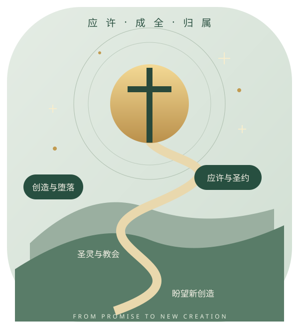

THE HEIDELBERG CATECHISM · AN ANNOTATED JOURNEY
2026.10.21 / V1 · 欧陆改革宗学习书
生死之间，
有一个永恒的归属。
海德堡要理问答 · 52 个主日完整深读
沿着整本圣经的故事，从创造走到新创造。
看见信经背后的历史，让教义成为可以理解、记住和活出的安慰。
52 主日129 问答6 认信原典1 救赎主线

应许在历史中展开，安慰在基督里扎根。01 · THE WHOLE BIBLE先看整本圣经，再进入每一问
一位三一神，在一段真实历史中，藉一位中保，招聚一个属他的群体，直到新创造。
✧ 创造
神、人、世界原初美善
→◐ 堕落
罪责、败坏、死亡
→❧ 应许
后裔、土地、祝福、君王
→✝ 基督
道成肉身、十架、复活
→◈ 教会
圣道、圣礼、感恩
→☀ 新创造
复活、审判、神人同住
圣经神学：沿历史看展开
创世记的起点是神的创造与人的使命。堕落使人既负罪债，又受败坏和死亡辖制。创3:15的应许开启救恩盼望；亚伯拉罕所得后裔与万国祝福，出埃及的释放与住在百姓中间，大卫家君王的应许，先知关于新心、新约与归回的宣告，都在基督里汇合。旧约不是失败宗教的记录，新约也不是另一位神另开的新方案。
基督完成救恩，圣灵把救恩施行于人。教会生活处于“已经”与“尚未”之间：罪不再作王，罪的存在却尚未完全除去；身体仍会死亡，却必复活。要理的安慰具有末世方向，因此既反对绝望，也反对宣称今世已经免除一切软弱。
系统神学：看教义如何相连
三一论回答谁在拯救；基督论回答谁能作中保；救恩论回答救赎如何成就并施行；教会论回答蒙恩者怎样共同生活；伦理与祷告回答恩典产生怎样的回应；末世论回答神要把一切带向何处。任何一项割裂，都可能损伤安慰。
三大普世信经守护三一与基督的身份；三项联合信条更细致说明福音、圣礼、教会和恩典。信条的权威从属于圣经，是教会共同宣认的规范，不是另一本受默示的经典。解释经文须尊重文体、上下文、历史处境及正典关系，不能只用零散经节为预设结论背书。
圣约不是交易，是神设立的关系
把握四个问题
谁主动？神主动启示、应许、立约与施行救赎。谁作中保？唯独基督，以真实人性代表人，以神性承担并赐生命。应许什么？神作我们的神，我们作他的子民；在基督里有赦罪、更新、继承与最终同住。如何回应？藉圣灵所生的信心领受，在悔改与顺服中生活；回应不成为买赎代价。
神的永恒旨意、历史中的圣约施行、个人的救恩经历有关联却不是同一个概念。外在属于教会并领受记号，不等于可以推断此人已重生或终必得救；真实应许与严肃警告也不能被消解为对非选民毫无意义的仪式。
连续而有发展
诺亚之约涉及受造秩序的保守；亚伯拉罕之约突出后裔与万国祝福；摩西之约在救赎之后设立以色列的敬拜和生活秩序，包含礼仪与国家形态；大卫之约指向君王；先知所应许的新约在基督血中确立。它们不是五条互不相干的得救道路，也不能每项细节直接互换。
“行为之约”“救赎之约”等术语在改革宗系统神学中有用，但三项联合信条的表述密度与威斯敏斯特不同。可参威敏7–8章，不将其额外术语冒充海德堡的逐字原话。圣约与拣选的关系、应许的表达、普遍恩典等议题在欧陆各联合会内存在具体差异，本书以共同信条为基准。
| 必须分清 | 彼此关系 | 错误捷径 |
|---|
| 救恩成就 / 救恩施行 | 基督一次成就；圣灵使人分享 | 把主观感受当成十架的补充 |
| 称义 / 成圣 | 同在基督里领受，前者判义，后者更新 | 以成圣程度决定称义根基 |
| 记号 / 所指实体 | 洗礼与圣餐按神应许印证救恩 | 自动得救，或仅剩人的表态 |
| 恩典 / 责任 | 恩典使回应真实并成为可能 | 以责任购买恩典，或以恩典取消顺服 |
| 共同信条 / 支派解释 | 以六份认信为界，注明后来的诠释差异 | 把单一宗派的全部主张当作欧陆共同立场 |
两条时间线，一个故事
圣经事件与信经成文属于不同年代。前者是救恩的历史，后者是教会在不同争论与牧养需要中对圣经的共同宣认。主日次序是教学次序，并非每课各发生在一个新地点。
救赎历史线
原初历史创造、堕落、应许
创1–11。此处不为创造与伊甸强定公历年份，也不把洪水路线画成考古定论。
族长与以色列从应许到圣约群体
族长、出埃及、旷野、王国。族长和出埃及的精确年代涉及不同年表，地图只呈现可靠区域联系。
前597 / 前586犹大被掳与耶路撒冷陷落
背约审判并未使神的应许终止；先知预告归回、新心与新约。前538年居鲁士时期开启归回。
一世纪基督成全，福音向万国
耶稣生年常约记前6–4年，受死常约记公元30或33年，非信经确定日期。复活、升天、五旬节展开新约教会使命。
尚未发生再来、复活与新创造
不计算日期。盼望使现在的圣洁、工作与爱有方向。
认信形成线
二至八世纪逐步定型使徒信经
源于早期受洗宣认及古罗马信条的发展；不是十二使徒各写一句的已证史实。
325 → 381 → 后续西方传承尼西亚传统
325年尼西亚会议驳斥亚流；381年君士坦丁堡会议关联扩展的共同文本。今日西方含“和子”的文本不是325年逐字原文。
约五至六世纪西方亚他那修信经
拉丁传统，作者不详，并非亚他那修亲笔。用密集对句守护三一、基督一位格二性；不把推测的产地标成事实。
1561 / 1563比利时与海德堡
低地国家逼迫处境下的公开认信；普法尔茨选帝侯腓德烈三世推动青年、牧者与学校共同教导。1563年1月19日前言；乌尔西努、俄利维亚努及团队参与，不能把复杂编写史简化为两人独自执笔。
1566 / 1618–1619传播与多特会议
Dathenus荷译与诗篇集推动传播；多特会议回应抗辩派，并强化海德堡按主日讲解。三项联合信条形成相互补充的共同规范。
故事演示 · 原创教学叙述
不是虚构古人对话；仅按史料与经文概括叙事关系。无自动声音。
历史核对：CanRC：海德堡引言 · CanRC：多特引言 · CCI：三经导言。古代信经日期与编写地域应保留不确定性。
04 · PLACES & CULTURES把文本放回真实的世界
点击地图上的编号，阅读该区域的语言、政治与教会处境。底图为现代地理轮廓，不代表古代国界；坐标仅为教学近似位置。
底图：Natural Earth 1:110m 公版地理数据；编号对应下方地点。为避免遮挡，邻近标记略有偏移。东地中海：犹太与希腊语网络
以色列的独一神信仰、圣殿敬拜、罗马统治、希腊通用语与城市交通交织。新约不是脱离犹太背景的哲学寓言；古代教会又必须在希腊语概念与帝国压力中精确说明父子同质、圣灵神性与基督身份。文化处境解释问题为何尖锐，却不能把教义真理简化成权力胜负。
拉丁西方与宗教改革欧洲
拉丁受洗与教导传统帮助信经记忆传播。十六世纪普法尔茨由选帝侯治理，学校、大学与教会共同承担教导；低地国家在哈布斯堡统治、迫害与政治冲突中公开认信。语言翻译、诗篇歌唱、家庭教育、主日下午讲道，使教义进入普通人的生活。今天应用这些经验，不等于恢复当年的政教制度。
为何需要三份信经，而不只一份？
共同的信仰骨架，不同的历史任务；不是三套相互竞争的救恩。
| 视角 | 使徒信经 | 尼西亚信经 | 亚他那修信经 |
|---|
| 形成方式 | 早期受洗宣认逐步发展 | 会议与后续共同认信传统 | 西方拉丁教导性宣认，作者不详 |
|---|
| 主要需要 | 我信谁，救恩发生了什么 | 子与灵是否真神；如何保持独一神信仰 | 三位怎样不成为三神；两性怎样不分裂成两位基督 |
|---|
| 语言形态 | 简短、叙事、三一结构 | “同质”等精确教义表达 | 肯定与否定对句，密集设定界限 |
|---|
| 圣经关系 | 从创造到永生的救恩脉络 | 约1、来1等关于子与灵的经文综合 | 整合独一神、位格区分及道成肉身的经文 |
|---|
| 教义增量 | 提供共同框架 | 使关键身份不被模糊解释 | 堵住混淆本质位格、混合或分裂基督的捷径 |
|---|
| 需要注意 | 非使徒逐人执笔；“降在阴间”有解释史 | 325、381与西方“和子”不可混为一版 | 非亚他那修所写；CCI此版42点，不套其他版44点 |
|---|
| 适合背诵 | 先背三段与救恩事件 | 抓住神性与受造的区别 | 先背“一体三位”“一位基督二性”的论证组 |
|---|
共同点：必须是这位救主
三者同认三一神、道成肉身、受死复活、审判和永生。若子只是受造物，便不能承担神人中保的救恩；若基督没有真实人性，便不能代表我们；若三位只是面具，父差子与灵使人联合基督的福音结构就失真。教义精确因此服务于敬拜与安慰。
不同点：问题不同，表述也须不同
简短宣认适于受洗教导，却可能被人用不同含义重复；会议表达回应具体误读；更细对句进一步划出语义边界。一份文件可以很长，却不因此抹去历代共同认信的价值。“普世”指大公信仰的见证，并不表示所有现存教会同样接纳每个文本或条款；东方教会对“和子”及亚他那修信经的地位有重大异议。
三项联合信条又各补足什么？
比利时 · 1561
我们共同相信什么
37条系统认信
＋海德堡 · 1563
这些真理如何安慰我
129问、52主日教导
＋多特 · 1618–1619
恩典为何真正有效
五项教义、四章结构
多特不是全部改革宗神学的“五个口号”，而是针对特定争论的正面教导与驳谬；三经也没有取代圣经。三项联合信条在同一使徒信仰内进一步阐释救恩、教会和生活。比较时既看共同宣认，也保留成文目的与范围。
使徒信经 · 干净版 ↗ 尼西亚信经 · 干净版 ↗ 亚他那修信经 · 干净版 ↗
06 · REMEMBER & RETURN把知识变成可以回想的路径
52 周学习，也可先读 7 次
- 主日1：唯一安慰与全书骨架。
- 主日2–4：罪苦，明白为何需要救恩。
- 主日5–22：中保与信经，明白谁成就救恩。
- 主日23–31：信心、称义、圣道圣礼与教会。
- 主日32–44：感恩、悔改与十诫。
- 主日45–52：祷告，活在天父面前。
- 重新读第一问和最后一问：从归属到阿们。
每次 20 分钟的四步
5 分钟：读指定原文与经文上下文。7 分钟：读解读，解释一个“因为—所以”。4 分钟：合上答案，回答回忆题并复述记忆句。4 分钟：写一个具体行动，用本课真理祷告。
在第1、3、7、14、30天闭卷回想，比连续重读更能发现记忆缺口。日期是学习建议；记住重点不等于已经理解全部争论。
已完成 0 / 52
完成标记与课堂笔记保存在当前浏览器、当前域名。跨设备或跨部署域名请先导出再导入。
论证关系思维图
生死属于基督
罪苦 · 为什么需救创造原善 → 亚当悖逆 → 罪责与败坏 → 公义审判
拯救 · 谁怎样救三一神 → 神人中保 → 十架复活 → 圣灵联合 → 因信称义 → 道与圣礼
感恩 · 怎样生活更新悔改 → 爱神爱人 → 忠于职分 → 倚靠祷告 → 盼望成全
每一个主日，沿同一福音继续走
以下129问正式正文全部展开。绿色边框标识指定原文；其他段落为原创教学解读。每课先读圣经上下文，再读原文与解析，不以记忆句代替完整内容。
序言 · 唯一安慰LORD’S DAY 01
01 属于基督：安慰的根基
问答 1–2 · 本课独立阅读 ↗
📖 先读经文上下文罗14:7–9；林前6:19–20；罗8:28–39
① 回到真实情境
保罗向罗马的犹太与外邦信徒说明共同归属；生死都处于复活之主的权柄下。1563年的普法尔茨面对教派争论、疾病与死亡，要理从人的实际恐惧进入客观救恩。
CCI 指定中文原文 · 全部展开
1．问：或生或死，你唯一的安慰是什么？
答：或生或死1，我的身体和灵魂都不属于我自己2，而属于我信实的救主耶稣基督3。他用自己的宝血完全偿还了我一切的罪债4，并且救我脱离魔鬼一切的权势5。他如此地保守我6，若没有天父的允许，我连一根头发也不能掉落7。的确，他叫万事互相效力，使我得救8。故此，他也藉着圣灵确保我得到永生9，并且使我从今以后甘心乐意地为他而活10。
- 罗14:7-9
- 林前6:19-20
- 林前3:23； 多2:14
- 彼前1:18-19； 约壹1:7；2:2
- 约8:34-36； 来2:14-15； 约壹3:8
- 约6:39-40，10:27-30； 帖后3:3； 彼前1:5
- 太10:29-31； 路21:16-18
- 罗8:28
- 罗8:15-16； 林后1:21-22；5:5； 弗1:13-14
- 罗8:14
CCI此问正文 ↗ · 指定中文译文 · SHA-256 322365fd78b6…
2．问：为了在这样的安慰中喜乐地生或死，你必须知道哪些事呢？
答：我必须知道三件事：第一，我的罪恶和愁苦有多么深重1。第二，我怎样才能得救，并脱离这一切的罪恶和愁苦2。第三，我当如何为这样的拯救而感谢神3。
- 罗3:9-10； 约壹1:10
- 约17:3； 徒4:12；10:43
- 太5:16； 罗6:13； 弗5:8-10； 彼前2:9-10
CCI此问正文 ↗ · 指定中文译文 · SHA-256 e4109c1c9674…
② 本质与论证：为什么这样回答
第一问先给整本书的答案，第二问才交代学习路径。身体与灵魂、生与死，排除了基督只管理宗教生活的想象。赎价、保守、确据和甘心生活分别显出子的救赎、父的护理、灵的工作。安慰是有主可属，不能缩成心理平静。苦难仍真实，最终却不能取消基督的所有权。
③ 放回圣经与圣约主线
出埃及的释放和归属，在基督用血买赎教会中达到实体；圣约关系的中心是神作我们的神。罪苦—拯救—感恩是理解恩典的次序，不是每个人必须重复的同一种情绪经历。
信条互证 · 条号索引，非逐字引用
比利时20–23；多特五8–13 · 比利时全文 · 多特全文
④ 今天如何回应
今天写下一个最怕失去的事物，说明基督的归属怎样比它更根本；不可用护理否认悲伤。
✦ 一句话记住 · 原创概括归属先于感受；恩典产生感恩。
合上内容，试着回答：为什么“我属于基督”能同时面对罪债、死亡和未来？
笔记只存于此浏览器，可在记忆模块导出。
第一部 · 罪与苦LORD’S DAY 02
02 律法如镜：爱揭露失序
问答 3–5 · 本课独立阅读 ↗
📖 先读经文上下文太22:34–40；申6:4–9；利19:18；罗3:19–20
① 回到真实情境
耶稣在耶路撒冷面对律法师的试探，以以色列熟悉的示玛与邻舍之爱概括律法；背景是圣约之民对神话语的责任。
CCI 指定中文原文 · 全部展开
3．问：你从何处得知你的罪恶和愁苦呢？
CCI此问正文 ↗ · 指定中文译文 · SHA-256 2eb8df197a43…
4．问：神的律法对我们有什么要求呢？
答：基督就此在马太福音第22章中概括地教导我们：“你要尽心、尽性、尽意，爱主你的神1。这是诫命中的第一，且是最大的。其次也相仿，就是要爱人如己2。这两条诫命是律法和先知一切道理的总纲。”
CCI此问正文 ↗ · 指定中文译文 · SHA-256 fa80281edb36…
5．问：你能完全遵守这些诫命吗？
答：不能1，因为我的本性是倾向于憎恨神和我的邻舍的2。
- 罗3:10,23； 约壹1:8,10
- 创6:5；8:21； 耶17:9； 罗7:23；8:7； 弗2:3； 多3:3
CCI此问正文 ↗ · 指定中文译文 · SHA-256 95ab61a8ba75…
② 本质与论证：为什么这样回答
第三问问认识罪的来源，第四问指出律法要求，第五问承认自己的失败。罪不仅是犯下少数禁令，更是整个人的爱偏离神。要求尽心尽性爱神，使自我比较失去辩护力。“倾向恨”指堕落本性与神为敌，不是否认世人会行社会层面的善事。律法的镜照功能使人求救，不提供自救的阶梯。
③ 放回圣经与圣约主线
从伊甸园到西奈，受造者应当爱神；救赎之后仍需同一爱的准则。主日二讲律法显罪，主日三十四以后讲律法引导感恩，功能不同而神的圣洁一致。
信条互证 · 条号索引，非逐字引用
比利时14–15；多特三/四1–5 · 比利时全文 · 多特全文
④ 今天如何回应
检视一件外表正确的行为：我是爱神爱人，还是只爱自己的声誉？认罪必须具体，也要走向福音。
✦ 一句话记住 · 原创概括律法照见我；福音领我归主。
合上内容，试着回答：同一律法为什么既能显罪，又能指导蒙救赎的人？
笔记只存于此浏览器，可在记忆模块导出。
第一部 · 罪与苦LORD’S DAY 03
03 受造美善，堕落败坏
问答 6–8 · 本课独立阅读 ↗
📖 先读经文上下文创1:26–31；创3；罗5:12–21；约3:3–8
① 回到真实情境
伊甸园的确切地点无法证实，不应在地图上标成考古定论。创世记把人置于受造世界、婚姻与神命令的真实关系中。
CCI 指定中文原文 · 全部展开
6．问：神原本就把人造得如此邪恶和悖逆吗？
答：不是。恰恰相反，神将人造得甚好1，且是按照他自己形像造的2，换言之，人有公义和真实的圣洁3；目的是要人能正确地认识他的创造者神4，衷心地爱他，与他同住在永远的福乐中，并赞美和荣耀他5。
- 创1:31
- 创1:26-27
- 弗4:24
- 西3:10
- 诗8
CCI此问正文 ↗ · 指定中文译文 · SHA-256 f45c95606b74…
7．问：那么，败坏的人性从何而来呢？
答：从我们的始祖亚当和夏娃在伊甸园中的悖逆和堕落而来1。人性因始祖的悖逆和堕落而变得败坏2，以至于我们都在罪中成孕而生3。
CCI此问正文 ↗ · 指定中文译文 · SHA-256 36e3594e6058…
8．问：我们是否如此败坏，以致完全没有能力行任何的善，反倒倾向于诸般的恶呢？
- 创6:5；8:21； 伯14:4； 赛53:6
- 约3:3-5
CCI此问正文 ↗ · 指定中文译文 · SHA-256 f1af5aafd159…
② 本质与论证：为什么这样回答
第六问拒绝把恶归给创造者；第七问追溯亚当的悖逆；第八问说明重生的必要。神的形象包含原初的公义圣洁，堕落毁坏人与神的正直关系，却没有使人不再是人。全然败坏是罪污染各层面、无人能凭本性转向神，不是每个人在每件事上都恶到最大程度。生理遗传不能穷尽保罗关于亚当代表性的教导。
③ 放回圣经与圣约主线
亚当与基督是救赎历史的两位元首；前者的悖逆使罪进入，后者的顺服带来生命。重生是圣灵更新内心，不是文化修养或家庭身份自然延伸。
信条互证 · 条号索引，非逐字引用
比利时14–15；多特三/四1–3、11–12 · 比利时全文 · 多特全文
④ 今天如何回应
既认真对待结构与习惯对罪的影响，也不把个人责任全推给环境；为更新的心祈求。
✦ 一句话记住 · 原创概括神造得好；人堕落深；灵更新真。
合上内容，试着回答：全然败坏与“人人都坏到极点”有何不同？
笔记只存于此浏览器，可在记忆模块导出。
第一部 · 罪与苦LORD’S DAY 04
04 公义与怜悯不能拆开
问答 9–11 · 本课独立阅读 ↗
📖 先读经文上下文创2:16–17；出34:6–7；罗2:1–11；太25:31–46
① 回到真实情境
出埃及记34章处于金牛犊背约之后：神赦免并重立约，同时宣告罪有后果。审判并非与圣约之爱无关。
CCI 指定中文原文 · 全部展开
9．问：神在律法中要求人做他们所做不到的事，这岂不是不公平吗？
答：并非如此！因为神造的人本来有能力遵行律法1，但人因受了魔鬼的引诱2，自甘悖逆3，强夺了神赐给他们以及他们所有后裔遵行律法的能力4。
- 创1:31
- 创3:13； 约8:44； 提前2:13-14
- 创3:6
- 罗5:12,18-19
CCI此问正文 ↗ · 指定中文译文 · SHA-256 5e90300913dd…
10．问：神会任凭这种悖逆和反叛不受惩罚吗?
答：当然不会。神极其恨恶我们的原罪和实际的罪，所以神要在今生和永恒中，以公义的审判来刑罚这些罪1，正如神所宣告的2：“凡不常照律法书上所记一切之事去行的，就被咒诅。”（加3:10）
- 出34:7； 诗5:4-6；7:11； 鸿1:2； 罗1:18；5:12； 弗 5:6； 来9:27
- 申27:26
CCI此问正文 ↗ · 指定中文译文 · SHA-256 0580a5981bad…
11．问：但是，神不也是慈爱的吗？
答：神确实是慈爱的1，但同时他也是公义的2。按着他的公义，凡干犯他至高威严的罪都必须受到最严厉的刑罚，就是身体和灵魂都要受永刑3。
- 出20:6；34:6-7； 诗103:8-9
- 出20:5；34:7； 申7:9-11； 诗5:4-6； 来10:30-31
- 太25:45-46
CCI此问正文 ↗ · 指定中文译文 · SHA-256 52a1295261b5…
② 本质与论证：为什么这样回答
第九问区分受造时的能力与人自招的败坏，第十问拒绝罪不受追究，第十一问把怜悯与公义一并承认。道德无能不能成为免除责任的理由，因为这无能属于背叛的本性。无限刑罚不能仅靠罪发生的时长衡量，而涉及所冒犯之神的圣洁与罪人持续的悖逆。解释时应保持经文的严肃，避免以恐吓操控人。
③ 放回圣经与圣约主线
圣约的祝福与咒诅显示神说话真实可信；十字架不是父忽然变得慈爱，而是三一神成就满足公义的怜悯。
信条互证 · 条号索引，非逐字引用
比利时20；多特二1–2 · 比利时全文 · 多特全文
④ 今天如何回应
停止用“大家都如此”淡化罪；也不要用自己的刑罚幻想替代神所启示的审判。
✦ 一句话记住 · 原创概括怜悯不取消公义；十架显明二者。
合上内容，试着回答：若神只忽略罪，为什么受害者也失去最终公义的盼望？
笔记只存于此浏览器，可在记忆模块导出。
第二部 · 拯救LORD’S DAY 05
05 需要怎样的中保
问答 12–15 · 本课独立阅读 ↗
📖 先读经文上下文诗130；赛53:4–12；来2:14–18；罗8:1–4
① 回到真实情境
旧约献祭发生于神赐给以色列的礼仪制度中，血与祭司指向罪、代替和亲近；不是周边宗教贿赂神明的翻版。
CCI 指定中文原文 · 全部展开
12．问：既然按照神公义的审判，我们都当受到今生及永世的刑罚，那么我们怎样才能逃脱这刑罚，并再次蒙神恩宠呢？
答：神要求他的公义得到满足1，因此，罪债必须得到完全的偿还，或是由我们自己偿还，或是由别人代为偿还2。
- 出20:5；23:7； 罗2:1-11
- 赛53:11； 罗8:3-4
CCI此问正文 ↗ · 指定中文译文 · SHA-256 7b33a82bf05d…
13．问：我们自己能够偿还这罪债吗？
CCI此问正文 ↗ · 指定中文译文 · SHA-256 f3d16e482d7c…
14．问：有没有其他受造物能替我们赎罪呢？
答：没有。首先，神不会因人犯的罪而刑罚其他受造物1。其次，没有一个受造物能够承担神对罪的永怒2，从而使人得到拯救。
- 结18:4,20； 来2:14-18
- 诗130:3； 鸿1:6
CCI此问正文 ↗ · 指定中文译文 · SHA-256 7ca0d14727ac…
15．问：那么，人必须寻求一位怎样的中保和救赎者呢？
答：他必须是真人1，且是无罪的人2；但同时，他必须比一切受造物更有能力，也就是说，他同时必须是真神3。
- 林前15:21； 来2:17
- 赛53:9； 林后5:21； 来7:26
- 赛7:14；9:6；耶23:6； 约1:1； 罗8:3-4
CCI此问正文 ↗ · 指定中文译文 · SHA-256 7fd471f5f159…
② 本质与论证：为什么这样回答
十二问提出脱离刑罚与重蒙恩待，十三问承认自己债上加债，十四问排除普通受造物，十五问确定中保必须是真实公义的人又是真神。要理的论证服务于福音启示，不能被当作脱离圣经的纯哲学证明。人必须顺服并承担责任；任何仅仅受造者都不能担当神忿怒而赐生命。
③ 放回圣经与圣约主线
献祭与祭司是预表，基督是成全；圣约关系的修复由神设立的中保完成。赎罪不是债权人向无关第三者施暴，子是甘愿成就父旨意的神子。
信条互证 · 条号索引，非逐字引用
比利时20–21、26；多特二1–4 · 比利时全文 · 多特全文
④ 今天如何回应
把“我多做一点就能抵消”改成具体认罪与投靠中保；补偿受害者是悔改果子，不是赎罪价格。
✦ 一句话记住 · 原创概括我不能偿；受造不能救；神人中保足够。
合上内容，试着回答：为什么中保的人性、公义与神性缺一不可？
笔记只存于此浏览器，可在记忆模块导出。
第二部 · 拯救LORD’S DAY 06
06 整本圣经同证一位救主
问答 16–19 · 本课独立阅读 ↗
📖 先读经文上下文创3:15；创12:1–3；赛53；路24:25–27、44–49；林前1:30
① 回到真实情境
从族长、以色列礼仪到先知，启示历经不同历史阶段；复活的耶稣教导门徒按应许与成全读经。
CCI 指定中文原文 · 全部展开
16．问：为什么他必须是真人，且是无罪的人？
答：他必须是真人，因为按着神公义的要求，人犯罪，必须由人来偿还罪债1；他必须是无罪的人，因为罪人不能为他人偿还罪债2。
- 罗5:12,15； 林前15:21； 来2:14-16
- 来7:26-27； 彼前3:18
CCI此问正文 ↗ · 指定中文译文 · SHA-256 145c7849261b…
17．问：为什么他必须同时是真神呢？
答：他必须是真神，才能藉着他神性的大能1，在他的人性中担当起神的忿怒2，并使我们重获他为我们赢得的公义和生命3。
- 赛9:6
- 申4:24； 鸿1:6； 诗130:3
- 赛53:5,11； 约3:16； 林后5:21
CCI此问正文 ↗ · 指定中文译文 · SHA-256 839c5fe618b3…
18．问：那么，谁是那位中保，既是真神，同时又是真实而无罪的人呢？
答：就是我们的主耶稣基督1，神使“他成为我们的智慧、公义、圣洁、救赎”（林前1:30）。
- 太1:21-23； 路2:11； 提前2:5；3:16
CCI此问正文 ↗ · 指定中文译文 · SHA-256 219627feb9cd…
19．问：你从哪里得知这事呢？
答：从神圣的福音中得知。这福音是神首先在伊甸园里亲自启示1，后来由族长2和众先知3宣告，并由律法中所论及的献祭和其他礼仪来预表4，最后藉着他的独生子来成就的5。
- 创3:15
- 创12:3；22:18；49:10
- 赛53； 耶23:5-6； 弥7:18-20； 徒10:43； 来1:1
- 利1:7； 约5:46； 来10:1-10
- 罗10:4； 加4:4-5； 西2:17
CCI此问正文 ↗ · 指定中文译文 · SHA-256 a272cd5f0e02…
② 本质与论证：为什么这样回答
十六至十八问逐一解释中保的真实人性、无罪与神性，最后指认耶稣基督。十九问给出圣经神学路线：乐园启示、族长先知传扬、祭礼预表、独生子成全。不是任意给每件旧约物品附会寓意，而是尊重其历史意义、正典发展与新约解释。救主不是后来为修补失败而临时出现。
③ 放回圣经与圣约主线
恩典之约的施行逐步展开，救恩实质同归基督。伊甸园的应许是福音曙光，亚伯拉罕之约、摩西礼仪和大卫王权各贡献不同层面的预备，不能扁平化。
信条互证 · 条号索引，非逐字引用
比利时17–21、25；多特二2–4 · 比利时全文 · 多特全文
④ 今天如何回应
读一段旧约时依次问：当时在说什么？在应许史处何位置？新约如何成全？
✦ 一句话记住 · 原创概括应许—预表—成全。
合上内容，试着回答：旧约如何指向基督，同时仍保有自身真实历史？
笔记只存于此浏览器，可在记忆模块导出。
第二部 · 拯救LORD’S DAY 07
07 真信心：认识并倚靠
问答 20–23 · 本课独立阅读 ↗
📖 先读经文上下文约1:12–13；罗3:21–28；罗10:9–17；弗2:8–10
① 回到真实情境
罗马书面对犹太人与外邦人的共同罪责，说明得救不凭族群特权；教会以共同宣认培育受洗者。
CCI 指定中文原文 · 全部展开
20．问：因着亚当，众人都灭亡了。那么是否藉着基督，众人都得救了呢？
答：不是。只有那些凭真信心连于基督，并接受他一切恩惠的人才会得救1。
- 太7:14； 约1:12；3:16,18,36； 罗11:16-21
CCI此问正文 ↗ · 指定中文译文 · SHA-256 8115d5b54bb6…
21．问：什么是真信心？
答：真信心是一种确知，藉此我认定神在圣经中向我们启示的一切皆为真理1；同时，真信心也是一种确信2，坚信神完全是出于他的恩典，且单单因着基督的功劳3，把赦罪之恩4、永远的公义和救赎，不仅赐给其他信徒，也赐给了我5。这信心是圣灵藉着福音在我心中做成的6。
- 约17:3,17； 来11:1-3； 雅2:19
- 罗4:18-21；5:1；10:10； 来4:16
- 罗3:20-26； 加2:16； 弗2:8-10
- 罗1:17； 来10:10
- 加2:20
- 徒16:14； 罗1:16；10:17； 林前1:21
CCI此问正文 ↗ · 指定中文译文 · SHA-256 22b61c6b0a40…
22．问：那么，基督徒必须相信什么？
答：基督徒必须相信福音的一切应许1，也就是《使徒信经》总结并教导的内容。
CCI此问正文 ↗ · 指定中文译文 · SHA-256 fb70cc0b3a4e…
23．问：这一信经包括哪些内容？
答：我信神，全能的父，创造天地的主。我信我主耶稣基督，神的独生子；因圣灵感孕，从童贞女马利亚所生；在本丢·彼拉多手下受难，被钉在十字架上，受死，被埋葬，降在阴间；第三天从死里复活；他升天，坐在全能父神的右边；将来必从那里降临，审判活人死人。我信圣灵。我相信圣而公之教会，我相信圣徒相通；我相信罪得赦免；我相信身体复活；我相信永生。阿们！
CCI此问正文 ↗ · 指定中文译文 · SHA-256 13e69cd41d94…
② 本质与论证：为什么这样回答
二十问否定自动普救，二十一问说明真知识与坚固信靠，二十二至二十三问把信心内容归纳为使徒信经。信心不是信自己相信得够强，而是领受神因基督白白赐下的应许。理性知识与个人信赖不可拆开；确据受到试探时，仍须回到可靠的对象。信心是领受工具，不是替代善工的新功劳。
③ 放回圣经与圣约主线
亚伯拉罕信神应许，新约信徒同因信与基督联合；圣约应许真实，却不能据此抹去悔改和信靠的呼召。圣灵藉福音生发信心。
信条互证 · 条号索引，非逐字引用
比利时22–23；多特三/四10–14 · 比利时全文 · 多特全文
④ 今天如何回应
说出你信靠的应许，而不只描述宗教情绪；帮助疑惑者看基督，不先给其情绪打分。
✦ 一句话记住 · 原创概括知道谁；信靠谁；领受谁的恩。
合上内容，试着回答：真信心与仅仅同意宗教事实有什么区别？
笔记只存于此浏览器，可在记忆模块导出。
第二部 · 拯救LORD’S DAY 08
08 三一：救恩的主体
问答 24–25 · 本课独立阅读 ↗
📖 先读经文上下文申6:4；太3:13–17；太28:18–20；林后13:14
① 回到真实情境
耶稣受洗时父发声、子受洗、灵降临；大使命把万民带入父子圣灵的一个名中。
CCI 指定中文原文 · 全部展开
24．问：这一信经是怎样划分的呢？
答：分为三部分：第一部分论及父神和我们的受造；第二部分论及子神和我们的得赎；第三部分论及圣灵和我们的成圣。
CCI此问正文 ↗ · 指定中文译文 · SHA-256 db29dc875cd3…
25．问：既然神只有一位1，那么你为什么说有三位，即圣父、圣子和圣灵呢？
答：因为神在圣经里就是这样启示他自己的2，这三个不同的位格乃是独一、真实、永在的神。
- 申6:4； 赛44:6；45:5； 林前8:4,6
- 创1:2-3； 赛61:1；63:8-10； 太3:16-17；28:18-19；路4:18；约14:26；15:26； 林后13:14； 加4:6； 多3:5-6
CCI此问正文 ↗ · 指定中文译文 · SHA-256 af09b6e4ff12…
② 本质与论证：为什么这样回答
二十四问按父创造、子救赎、灵成圣安排信经，二十五问据启示承认一神三位。分工概括不是把每项工作隔离：三一神对外工作不可分，位格使命有别。“一”指本质，“三”指位格，不在同一意义上说一又说三。水的三态会暗示一位轮换面具，三个人合作又会暗示三神，都不能充当解释模型。
③ 放回圣经与圣约主线
圣约不是抽象神性与人订约：父在子里接纳人，圣灵使人真实分享基督。三一教义与祷告、洗礼、确据直接相连。
信条互证 · 条号索引，非逐字引用
比利时8–11；三大普世信经 · 比利时全文 · 多特全文
④ 今天如何回应
祷告时思想：藉着子、在圣灵里来到父面前；不把三个位格分成严格与慈爱两派。
✦ 一句话记住 · 原创概括一体不分；三位不混。
合上内容，试着回答：为什么三一教义不是与救恩无关的数学谜题？
笔记只存于此浏览器，可在记忆模块导出。
第二部 · 拯救LORD’S DAY 09
09 创造主成为我的父
问答 26 · 本课独立阅读 ↗
📖 先读经文上下文创1–2；诗33；约1:1–3；罗8:14–17
① 回到真实情境
古代近东各民族有神话式起源叙事；创世记宣告独一神自由创造，世界不是神明争斗后的残余或神体的一部分。
CCI 指定中文原文 · 全部展开
26．问：当你宣告“我信神，全能的父，创造天地的主”时，你相信什么？
答：我相信我主耶稣基督永在的父也是我的神、我的父。虽然他有大能从无有中创造了天地并其中的万有1，又以他永恒的计划和护理托住并管理着这一切2，但他因他儿子基督的缘故作了我的神和天父3。我毫无疑惑、完全相信他必供应我身体和灵魂一切的需要4；此外，在我经过今生的流泪谷时，无论他给予我什么样的逆境，他都会使之变为于我有益5。他之所以能如此行，乃因他是全能的神6；他也乐意如此行，因他是我信实的天父7。
- 创1；2； 出20:11； 伯38-39； 诗33:6； 赛44:24； 徒4:24；14:15
- 诗104:27-30； 太6:30；10:29； 弗1:11
- 约1:12-13； 罗8:15-16； 加4:4-7； 弗1:5
- 诗55:22； 太6:25-26； 路12:22-31
- 罗8:28
- 创18:14； 罗8:31-39
- 太6:32-33；7:9-11
CCI此问正文 ↗ · 指定中文译文 · SHA-256 5fc142f7bc5c…
② 本质与论证：为什么这样回答
第二十六问把创造、护理与在基督里的父子关系连起来。神从无创造，受造界与神有不可跨越的本质区别；世界因此具有真实价值，也不能承载终极敬拜。称神为父的救赎性意义来自基督，不等于凡受造者都自动有称义与儿女名分。父有能力又愿意供应，信徒的信靠不是对未知命运的乐观。
③ 放回圣经与圣约主线
创造为圣约生活提供场所、身体与责任；救赎恢复受造目的，最终指向新创造，绝非逃离物质世界。
信条互证 · 条号索引，非逐字引用
比利时12–13、20 · 比利时全文 · 多特全文
④ 今天如何回应
在工作、休息与身体照顾中承认受造限制；为日用需要祈求而非把自足当成熟。
✦ 一句话记住 · 原创概括他能，因为全能；他愿，因为是父。
合上内容，试着回答：创造之父与在基督里得儿女名分如何联系又如何区别？
笔记只存于此浏览器，可在记忆模块导出。
第二部 · 拯救LORD’S DAY 10
10 护理：在不可控中信靠
问答 27–28 · 本课独立阅读 ↗
📖 先读经文上下文太10:26–31；伯1–2；创50:15–21；罗8:28
① 回到真实情境
约瑟被卖、饥荒与家族迁徙发生于古代近东生存压力中；神的良善目的与兄长的恶意在同一历史事件中有不同道德性质。
CCI 指定中文原文 · 全部展开
27．问：你如何理解“神的护理”？
答：神的护理是指神藉着他全能、永在的能力1，仍然托住天地万有，如同他用手托住一般2；他也管理着这一切——不论一草一木、雨水干旱、丰年荒年、日用饮食、健康疾病、富足贫穷3，所临到我们的一切，皆非出于偶然4，乃是出于天父大能的手5。
- 耶23:23-24； 徒17:24-28
- 来1:3
- 耶5:24； 徒14:15-17； 约9:3； 箴22:2
- 箴16:33
- 太10:29
CCI此问正文 ↗ · 指定中文译文 · SHA-256 ffa1b52a3cc7…
28．问：知道神创造万有并且仍护理、托住万有对我们有何益处呢？
答：这让我们可以在逆境中忍耐1，在顺境中感恩2；对于未来，我们可以深信这位信实的父神，任何受造之物都不能叫我们与神的爱隔绝3，因万有都在他的手中；若不是出于神的旨意，万有都不能转动4。
- 伯1:21-22； 诗39:10； 雅1:3
- 申8:10； 帖前5:18
- 诗55:22； 罗5:3-5；8:38-39
- 伯1:12；2:6； 箴21:1； 徒17:24-28
CCI此问正文 ↗ · 指定中文译文 · SHA-256 bd40cb861b20…
② 本质与论证：为什么这样回答
二十七问说明神持续维护并治理万有，二十八问落实为逆境忍耐、顺境感恩、将来信靠。护理既非神启动世界后离场，也非命运机械运转。神掌权不使罪成为善，不取消人的责任和次因。我们知道万事被纳入救恩目的，却不因此知道每一次疾病、灾难具体为了什么。
③ 放回圣经与圣约主线
神保守自己所立的约，藉人行动、自然秩序和真实历史成就旨意；信靠护理反而鼓励尽责使用医疗、劳动和互助。
信条互证 · 条号索引，非逐字引用
比利时13；多特五3–8 · 比利时全文 · 多特全文
④ 今天如何回应
患难中允许哀哭并采取实际帮助；不要向受苦者武断解释神隐藏的理由。
✦ 一句话记住 · 原创概括逆境忍；顺境谢；未来靠。
合上内容，试着回答：神掌权为什么不等于人无责任、无需行动？
笔记只存于此浏览器，可在记忆模块导出。
第二部 · 拯救LORD’S DAY 11
11 耶稣：唯一拯救者
问答 29–30 · 本课独立阅读 ↗
📖 先读经文上下文太1:18–25；徒4:8–12；西1:15–20
① 回到真实情境
马太把耶稣的降生放在大卫家谱与以色列应许中；使徒在耶路撒冷公开宣告救恩来自被钉而复活的主。
CCI 指定中文原文 · 全部展开
29．问：为什么神的儿子被称为“耶稣”，即救主呢？
答：因为他把我们从一切的罪中拯救出来1，又因为除他以外别无拯救2。
- 太1:21； 来7:25
- 赛43:11； 约15:4-5； 徒4:11-12； 提前2:5
CCI此问正文 ↗ · 指定中文译文 · SHA-256 f3b0874ad941…
30．问：那些从圣徒身上、从自身或从别处寻找拯救或福乐的人，也信独一的救主耶稣吗？
答：他们不信。虽然，在言语上，他们指着耶稣夸口，但实际上却否认独一的救主耶稣1。然而，耶稣是不是一位完全的救主，二者之一必是真理：要么耶稣不是一位完全的救主，要么凡凭真信心接受这位救主的人，就必定在他里面得着救赎所必需的一切2。
- 林前1:12-13； 加5:4
- 西1:19-20；2:10； 约壹1:7
CCI此问正文 ↗ · 指定中文译文 · SHA-256 f1d546393476…
② 本质与论证：为什么这样回答
二十九问解释名字与使命：救人脱离罪；三十问检验口头称耶稣为救主与实际另找救恩是否一致。基督救赎的完全性排除圣徒功德、宗教成就或自我净化的补足。医治、社群和道德改善可以是真实恩惠，却不是替代罪得赦免的终极救恩。排他性的救恩宣告应以谦卑和见证表达，不成为蔑视他人的许可证。
③ 放回圣经与圣约主线
旧约拯救事件预备末后的救主；圣约子民的身份始终依赖神的怜悯，不能以宗教家世代替基督。
信条互证 · 条号索引，非逐字引用
比利时21–23、26 · 比利时全文 · 多特全文
④ 今天如何回应
问自己最深的安全感落在哪里；让实际决定与“耶稣足够”的宣认相称。
✦ 一句话记住 · 原创概括名字宣告使命：救我脱离罪。
合上内容，试着回答：人怎样可能口称耶稣，却在实际中否认他的完全救恩？
笔记只存于此浏览器，可在记忆模块导出。
第二部 · 拯救LORD’S DAY 12
12 基督三职与信徒身份
问答 31–32 · 本课独立阅读 ↗
📖 先读经文上下文申18:15–19；诗110；路4:16–21；彼前2:4–10
① 回到真实情境
以色列以膏油分别先知、祭司和君王；拿撒勒会堂里耶稣以以赛亚的受膏宣告解释自己的使命。
CCI 指定中文原文 · 全部展开
31．问：为什么称他为“基督”，即受膏者呢？
答：因为他被父神所立，又被圣灵所膏1，作我们的大先知和教师2，向我们完全启示神在我们的救恩上预定的奥秘计划和旨意3；他是我们唯一的大祭司4，藉着他一次献上的身体救赎了我们5，又在父神面前不住地为我们代求6；他是我们永远的君王7，用他的话语和圣灵统管我们，护卫并保守我们不失去他为我们获得的救恩8。
- 诗45:7（来1:9）； 赛61:1（路4:18）； 路3:21-22
- 申18:15（徒3:22）
- 约1:18；15:15
- 诗110:4（来7:17）
- 来9:12；10:11-14
- 罗8:34； 来9:24； 约壹2:1
- 亚9:9（太21:5）； 路1:33
- 太28:18-20； 约10:28； 启12:10-11
CCI此问正文 ↗ · 指定中文译文 · SHA-256 586ede542fba…
32．问：为什么你被称为基督徒呢？
答：因为藉着信，我成为基督肢体的一部分1，从而在他的受膏上有份2，以至于我作为先知宣告他的名3；作为祭司把自己献给他，当作感恩的活祭4；又作为君王，用自由和无亏的良心在今生与罪和魔鬼争战5，并且从此以后，与他一同作王，永远统治万物6。
- 林前12:12-27
- 珥2:28（徒2:17）； 约壹2:27
- 太10:32； 罗10:9-10； 来13:15
- 罗12:1； 彼前2:5,9
- 加5:16-17； 弗6:11； 提前1:18-19
- 太25:34； 提后2:12
CCI此问正文 ↗ · 指定中文译文 · SHA-256 8379c864eaa0…
② 本质与论证：为什么这样回答
三十一问用先知、祭司、君王说明受膏者的工作：启示父旨、一次献己并代求、治理保守。三十二问从与基督联合说明基督徒分享其膏抹：认信其名、献上感恩、抵挡罪恶并盼望同作王。分享不是每个人都取得教会职分，也不是信徒成为赎罪者。基督的独一职分与我们的衍生性服事必须分清。
③ 放回圣经与圣约主线
旧约三职的不足期待一位完全受膏者；新约教会成为属神群体，敬拜、见证与生活都由中保塑造。
信条互证 · 条号索引，非逐字引用
比利时21、26、27–31 · 比利时全文 · 多特全文
④ 今天如何回应
用“真理—献上—争战”检视一天：说出真道、服事邻舍、抵挡一个具体罪。
✦ 一句话记住 · 原创概括先知教我；祭司赎我；君王守我。
合上内容，试着回答：分享基督三职为什么不等于取代牧师或替人赎罪？
笔记只存于此浏览器，可在记忆模块导出。
第二部 · 拯救LORD’S DAY 13
13 独生子与我们的主
问答 33–34 · 本课独立阅读 ↗
📖 先读经文上下文约1:1–18；加4:4–7；彼前1:18–19
① 回到真实情境
约翰在犹太独一神信仰中宣告道是神又与神同在；罗马社会的主权与奴役语言使“属于谁”格外具体。
CCI 指定中文原文 · 全部展开
33．问：既然我们也是神的儿女，为什么基督还被称为神的独生子呢？
答：因为唯有基督是神永恒的、本来的儿子1；而我们是因着基督，靠着恩典，蒙神收纳，成为他的儿女的2。
- 约1:1-3,14,18； 3:16； 罗8:32； 来1； 约壹4:9
- 约1:12； 罗8:14-17； 加4:6； 弗1:5-6
CCI此问正文 ↗ · 指定中文译文 · SHA-256 f4c3a7b78c50…
34．问：你为什么称他为“我们的主”呢？
答：因为他不是用金银，而是用他的宝血1买赎了我们，使我们的身体和灵魂2脱离罪的捆绑；他又将我们从撒但一切的权势中解救出来，使我们作他自己的产业3。
- 彼前1:18-19
- 林前6:20； 提前2:5-6
- 西1:13-14； 来2:14-15
CCI此问正文 ↗ · 指定中文译文 · SHA-256 6b9a7659a5ec…
② 本质与论证：为什么这样回答
三十三问区分基督永恒、本性上的儿子身份与信徒蒙收纳的儿女身份；三十四问解释主权建立在买赎之上。子不是父在时间中创造的最高生物，也不是后来因表现优良才被收养。信徒被提升进入父子关系，却没有变成神的本质。称基督为主包括自由地顺服，不只是私人安慰的称呼。
③ 放回圣经与圣约主线
神子使奴仆得儿女名分；出埃及中从法老转归耶和华的模式，在十字架买赎中达至圆满。
信条互证 · 条号索引，非逐字引用
比利时10、18、22；尼西亚信经 · 比利时全文 · 多特全文
④ 今天如何回应
把一个生活领域交回主权之下；同时以儿女的信赖而非奴仆式讨好来顺服。
✦ 一句话记住 · 原创概括他本是子；我蒙收纳；我们归主。
合上内容，试着回答：永恒受生、道成肉身与信徒收纳为子为何不能混同？
笔记只存于此浏览器，可在记忆模块导出。
第二部 · 拯救LORD’S DAY 14
14 道成肉身：真实进入我们
问答 35–36 · 本课独立阅读 ↗
📖 先读经文上下文路1:26–38；太1:18–25；来2:14–18、4:14–16
① 回到真实情境
拿撒勒属于加利利，伯利恒位于犹太地；耶稣降生进入第二圣殿时期的犹太家庭和罗马统治下的世界。
CCI 指定中文原文 · 全部展开
35．问：你宣告说“因圣灵感孕，从童贞女马利亚所生”，这句话是什么意思？
答：这句话的意思是：神的永恒儿子，从现在到永远都是永恒的真神1；因圣灵的运行2，他从童贞女马利亚的血肉之身取了人的样式3，从而成为大卫的真正后裔4，凡事与他的弟兄相同5，只是没有罪6。
- 约1:1； 10:30-36； 罗1:3； 9:5； 西1:15-17； 约壹5:20
- 路1:35
- 太1:18-23； 约1:14； 加4:4； 来2:14
- 撒下7:12-16； 诗132:11； 太1:1； 路1:32； 罗1:3
- 腓2:7； 来2:17
- 来4:15； 7:26-27
CCI此问正文 ↗ · 指定中文译文 · SHA-256 f3a4a765c582…
36．问：基督因圣灵感孕而生对你有什么益处呢？
答：基督是我们的中保1， 他以自己的无罪和全然圣洁，在神的面前遮盖了我成孕出生时就有的罪2。
- 提前2:5-6； 来9:13-15
- 罗8:3-4； 林后5:21； 加4:4-5； 彼前1:18-19
CCI此问正文 ↗ · 指定中文译文 · SHA-256 e3311e32535b…
② 本质与论证：为什么这样回答
三十五问承认永恒之子藉圣灵从马利亚取了真实人性，三十六问指出其圣洁遮盖我们的罪。童贞女怀孕不表示人性邪恶或女性使人有罪，也不是子从此才存在。基督有真实身体、理性灵魂与人的意志，却没有罪；神性没有转化成肉体，人性也不被吞没。救主亲近软弱者的根基是同受试探而无罪。
③ 放回圣经与圣约主线
女人后裔的应许在真实后裔中成全；圣约中保必须是我们的弟兄，才能代表我们顺服并受死。
信条互证 · 条号索引，非逐字引用
比利时18–19；亚他那修信经 · 比利时全文 · 多特全文
④ 今天如何回应
向基督坦诚身体与心灵的软弱；不要把人的有限性本身等同道德犯罪。
✦ 一句话记住 · 原创概括一位子；两全性；无罪中保。
合上内容，试着回答：为什么“像人”不足以表达道成肉身？
笔记只存于此浏览器，可在记忆模块导出。
第二部 · 拯救LORD’S DAY 15
15 受苦与彼拉多：救恩落入历史
问答 37–39 · 本课独立阅读 ↗
📖 先读经文上下文赛53；路23；加3:10–14；彼前2:21–25
① 回到真实情境
本丢彼拉多为罗马驻犹太总督，任期通常记为公元26–36年。十字架是罗马公开羞辱与处死的工具；犹太律法中挂木又关联咒诅。
CCI 指定中文原文 · 全部展开
37．问：你如何理解他“受难”？
答：基督在地上生活的整个时期，特别是最后阶段，用他的肉体与灵魂担当了神对全人类罪恶的忿怒1。因此，藉着他的受难，基督成为唯一的赎罪祭2，他已将我们的身体和灵魂从永远的咒诅下救赎出来3，并从父神那里为我们获得了恩典、公义和永生4。
- 赛53； 提前2:6； 彼前2:24； 3:18
- 罗3:25； 林前5:7； 弗5:2； 来10:14； 约壹2:2；4:10
- 罗8:1-4； 加3:13； 西1:13； 来9:12； 彼前1:18-19
- 约3:16； 罗3:24-26； 林后5:21； 来9:15
CCI此问正文 ↗ · 指定中文译文 · SHA-256 eff7943e78aa…
38．问：为什么基督在“本丢·彼拉多手下受难”？
答：基督本是无辜，却被属世的官长定了罪1。正因如此，他使我们免受神本要施行在我们身上的严厉审判2。
- 路23:13-24； 约19:4,12-16
- 赛53:4-5； 林后5:21； 加3:13
CCI此问正文 ↗ · 指定中文译文 · SHA-256 c4a387610723…
39．问：基督被钉死在十字架上，而非以其他方式受死有什么特殊意义吗？
答：有。藉此我确信，他担当了本该加在我身上的咒诅，因为凡钉在十字架上的是受神咒诅的1。
CCI此问正文 ↗ · 指定中文译文 · SHA-256 9afe978fac49…
② 本质与论证：为什么这样回答
三十七问把基督一生特别末后的受苦解释为担当神对罪的忿怒；三十八问说明无罪者在地上审判官前被判，三十九问指出十字架咒诅。历史暴力与代赎意义不能二选一。神子甘愿献上自己，不是父与子意志对立；人的不公不能阻止神完成救赎。信经提彼拉多，把信仰钉在具体公共历史里。
③ 放回圣经与圣约主线
逾越节与以赛亚受苦仆人汇聚于十架；圣约咒诅由中保承担，使应许的福临到万民。
信条互证 · 条号索引，非逐字引用
比利时20–21；多特二1–4 · 比利时全文 · 多特全文
④ 今天如何回应
面对不公既寻求正当公义，也仰望真正无罪者的代赎；不能把一切受苦自动称为赎罪。
✦ 一句话记住 · 原创概括历史真实；审判真实；代赎真实。
合上内容，试着回答：彼拉多的名字怎样阻止我们把救恩读成抽象神话？
笔记只存于此浏览器，可在记忆模块导出。
第二部 · 拯救LORD’S DAY 16
16 死、埋葬与“降在阴间”
问答 40–44 · 本课独立阅读 ↗
📖 先读经文上下文创2:17；罗6:1–11；腓1:21–23；路23:43–46
① 回到真实情境
耶稣在耶路撒冷城外被钉并葬于坟墓；墓葬证实死亡的现实，不能据今日景点直接证明所有细节。
CCI 指定中文原文 · 全部展开
40．问：基督为什么必须自己卑微， 以至于死呢？
答：因为神的公义和真理1要求如此：除了神子的死以外的任何方法都不能为我们偿还罪债2。
- 创2:17
- 罗8:3； 腓2:8； 来2:9,14-15
CCI此问正文 ↗ · 指定中文译文 · SHA-256 8a1c7db54247…
41．问：为什么耶稣要被“埋葬”呢？
- 赛53:9； 约19:38-42； 徒13:29； 林前15:3-4
CCI此问正文 ↗ · 指定中文译文 · SHA-256 8fef46d6b9de…
42．问：既然基督已经为我们死了，为什么我们还必须死呢？
答：我们的死不是为自己的罪作赎价，而是终止犯罪，是进入永生的门1。
- 约5:24； 腓1:21-23； 帖前5:9-10
CCI此问正文 ↗ · 指定中文译文 · SHA-256 2953382ca16c…
43．问：从基督在十字架上的献祭和受死，我们还得到了哪些益处呢？
答：藉着基督的死，我们的旧人与他同钉十字架，并与他同死、同埋葬1，以至于肉体的邪情私欲不能再在我们里面作王2；相反，我们可以将自己当作感恩的祭献给他3。
- 罗6:5-11； 西2:11-12
- 罗6:12-14
- 罗12:1； 弗5:1-2
CCI此问正文 ↗ · 指定中文译文 · SHA-256 8bdcc824804a…
44．问：为什么加上“降在阴间”这句话呢？
答：好使我在极大的悲痛和试探中能够坚信，藉着他在遭受这一切苦难1时所忍受的无法言表的痛苦、疼痛、恐惧和苦楚，尤其是在十字架上所忍受的，我主耶稣基督已经拯救我脱离了地狱的痛苦和折磨2；也使我能因信这一切而得着安慰。
- 诗18:5-6； 116:3； 太26:36-46； 27:45-46； 来5:7-10
- 赛53
CCI此问正文 ↗ · 指定中文译文 · SHA-256 cf9f30d4c268…
② 本质与论证：为什么这样回答
四十问以公义说明基督必须死，四十一问说明埋葬见证真死，四十二问区分信徒之死与偿罪，四十三问联系旧人同死，四十四问把“降在阴间”用于基督担当极深苦楚，尤其十架。这里陈述海德堡的解释，不把它冒充历代所有教会的唯一历史理解。基督受死已完成代赎，不需要死后再受刑才补足。
③ 放回圣经与圣约主线
咒诅与死亡被末后亚当担当；信徒仍死，却因联合基督而进入与主同在的生命。与罪同死不是肉体自残，而是旧权势被打破。
信条互证 · 条号索引，非逐字引用
比利时19–21；海德堡44 · 比利时全文 · 多特全文
④ 今天如何回应
临终关怀可承认死亡是仇敌，同时宣告基督已改变其结局；无需否认哀伤来证明信心。
✦ 一句话记住 · 原创概括他真死；我不偿罪；旧人同钉。
合上内容，试着回答：基督之死与信徒之死在救恩意义上有什么关键区别？
笔记只存于此浏览器，可在记忆模块导出。
第二部 · 拯救LORD’S DAY 17
17 复活：新创造已经开始
问答 45 · 本课独立阅读 ↗
📖 先读经文上下文林前15:12–28；罗4:25；西3:1–4
① 回到真实情境
复活见证首先发生在一世纪犹太地，面对犹太人对末日复活的盼望，也挑战希罗世界把肉体生命视为低下的倾向。
CCI 指定中文原文 · 全部展开
45．问：基督的复活使我们得到了哪些益处呢？
答：第一，他藉着复活战胜了死亡，叫我们在他以死为我们获得的义上有份1。第二，藉着他的能力，我们也得以活过来，得着新生命2。第三，基督的复活是我们将来荣耀复活的确据3。
- 罗4:25； 林前15:16-20； 彼前1:3-5
- 罗6:5-11； 弗2:4-6； 西3:1-4
- 罗8:11； 林前15:12-23； 腓3:20-21
CCI此问正文 ↗ · 指定中文译文 · SHA-256 1377fe1ef427…
② 本质与论证：为什么这样回答
第四十五问指出三重益处：分享他所取得的义、如今被唤醒进入新生命、将来身体复活的保证。复活不是门徒重新振作的心理事件，而是被钉之主身体复起、进入荣耀。称义与更新不可分离却不可混淆：生命改变是复活能力的结果，不是神判我为义的补充依据。第一果子保证整个收成，却不代表今生已经没有疾病。
③ 放回圣经与圣约主线
基督的复活启动末世新创造，圣灵把将来的生命带入现在；亚当里的死亡由末后亚当的生命翻转。
信条互证 · 条号索引，非逐字引用
比利时20、23、37；多特五1–3 · 比利时全文 · 多特全文
④ 今天如何回应
以复活盼望支持身体照顾、工作与圣洁，而不是放弃世界或追逐无病的承诺。
✦ 一句话记住 · 原创概括义得着；人更新；身必起。
合上内容，试着回答：复活的三个益处怎样连接过去、现在与将来？
笔记只存于此浏览器，可在记忆模块导出。
第二部 · 拯救LORD’S DAY 18
18 升天：中保与元首
问答 46–49 · 本课独立阅读 ↗
📖 先读经文上下文徒1:1–11；来4:14–16；弗2:4–7；约14:1–3
① 回到真实情境
使徒行传把升天置于橄榄山附近，随后门徒回耶路撒冷等候圣灵；这是使命展开的转折。
CCI 指定中文原文 · 全部展开
46．问：你如何理解他“升天”？
答：基督在门徒眼前从地上被接升天1；他为我们的益处2留在那里，直到他再来，审判活人死人3。
- 可16:19； 路24:50-51； 徒1:9-11
- 罗8:34； 来4:14；7:23-25；9:24
- 太24:30； 徒1:11
CCI此问正文 ↗ · 指定中文译文 · SHA-256 1abd8f6d9ed9…
47．问：这样，基督岂不是没有照他所应许的，与我们同在直到世界的末了吗1？
答：基督是真人，也是真神。就他的人性而言，他已经不在地上了2；但就他的神性、威严、恩典和灵而言，他从未离开过我们3。
- 太28:20
- 太26:11； 约16:28；17:11； 徒3:19-21； 来8:4
- 太28:18-20； 约14:16-19；16:13
CCI此问正文 ↗ · 指定中文译文 · SHA-256 e4cc339a4abd…
48．问：但如果基督的神性所在之处不都有人性同在的话，他的神人二性岂不是彼此分离了吗？这岂不是说他的神人二性是彼此分开的吗？
答：绝非如此！因为他的神性是不受限制、无处不在的1。因此，他的神性必然超乎他所取的人性，却又在人性之内，并且仍与之联合2。
- 耶23:23-24； 徒7:48-49
- 约1:14；3:13； 西2:9
CCI此问正文 ↗ · 指定中文译文 · SHA-256 3055cf76d649…
49．问：基督升天对我们有什么益处呢？
答：第一，他在天上他父面前作我们的代求者1；第二，我们的主耶稣基督的肉身在天上，这就确保了基督作为我们的头，也要把我们这些作他肢体的带到他那里去2；第三，他差遣圣灵作为担保3，使我们藉着圣灵的能力不求地上的事，但求天上的事，那里有基督坐在神的右边4。
- 罗8:34； 约壹2:1
- 约14:2；17:24； 弗2:4-6
- 约14:16； 徒2:33； 林后1:21-22；5:5
- 西3:1-4
CCI此问正文 ↗ · 指定中文译文 · SHA-256 2662e51cacdc…
② 本质与论证：为什么这样回答
四十六问讲基督在人性上离开地上直到再来，四十七至四十八问说明其神性不受空间限制，两性仍合于一位格，四十九问列出代求、人性在天作保证、赐灵为凭据。升天不是耶稣变成无身体的观念，神性无处不在也不使人性变得无处不在。改革宗在此与某些路德宗基督论表达有区别，应准确说明而非漫画化。
③ 放回圣经与圣约主线
大祭司进入真正圣所，代表属他的人；元首在天保障肢体的归宿，圣灵把天上的基督与地上的教会相连。
信条互证 · 条号索引，非逐字引用
比利时19、26；海德堡47–49 · 比利时全文 · 多特全文
④ 今天如何回应
在被误解或祷告无力时思想中保代求；向天举目也要回应地上使命。
✦ 一句话记住 · 原创概括人在天为我；灵在地联我。
合上内容，试着回答：基督升天为什么没有使他远离自己的教会？
笔记只存于此浏览器，可在记忆模块导出。
第二部 · 拯救LORD’S DAY 19
19 右边与再来：王也是救主
问答 50–52 · 本课独立阅读 ↗
📖 先读经文上下文诗110；弗1:20–23；太25:31–46；腓3:20–21
① 回到真实情境
右边是古代君王尊荣与统治的表达，不是给神画身体位置；教会在帝国权力之下承认基督至高。
CCI 指定中文原文 · 全部展开
50．问：为什么加上“坐在全能父神的右边”呢？
答：因为基督升到天上，为的是要在那里彰显他是教会的头1，父藉着他管理万有2。
- 弗1:20-23； 西1:18
- 太28:18； 约5:22-23
CCI此问正文 ↗ · 指定中文译文 · SHA-256 8e11f952e643…
51.问：我们从元首基督的这种荣耀中得到哪些益处呢？
答：第一，藉着他的圣灵，基督将诸般属天的恩赐浇灌给我们这些作他肢体的人1；第二，藉着他的权能，基督护卫并保守我们免遭一切仇敌的苦害2。
- 徒2:33； 弗4:7-12
- 诗2:9； 110:1-2； 约10:27-30； 启19:11-16
CCI此问正文 ↗ · 指定中文译文 · SHA-256 a5e6a9ccbf02…
52．问：基督“将来必从那里降临，审判活人死人”，这对你有什么安慰呢？
答：这使我能在诸般的忧愁和逼迫中，仰望并迫切地等候曾为我的缘故甘愿受神的审判，又除去我一切咒诅的那一位来作从天降临的审判官1。那时，他必要将他的和我的一切仇敌都丢入永刑中，却要将他所有的选民，包括我，都带到他自己那里，得享天上的喜乐和荣耀2。
- 路21:28； 罗8:22-25； 腓3:20-21； 多2:13-14
- 太25:31-46； 帖前4:16-17； 帖后1:6-10
CCI此问正文 ↗ · 指定中文译文 · SHA-256 414dd5116975…
② 本质与论证：为什么这样回答
五十问说明升天显明教会元首，五十一问指出赐恩并保护，五十二问以再来审判带来安慰。审判者正是曾担当我咒诅者，所以信徒不是靠自身无瑕等候审判。安慰不取消对恶的追究，也不使教会有权自行施行末日审判。今世权势真实，却不是历史最后的话语。
③ 放回圣经与圣约主线
大卫王约在复活升天的基督里成全；国度已临到却尚未完全显现，救赎等候身体与世界一同更新。
信条互证 · 条号索引，非逐字引用
比利时26、27、37；多特五8–10 · 比利时全文 · 多特全文
④ 今天如何回应
把新闻中的强权放在基督终极王权下看，也认真履行公民与邻舍责任；不计算末日日期。
✦ 一句话记住 · 原创概括元首赐恩；君王保守；救主审判。
合上内容，试着回答：为什么末日审判对信徒既是严肃事实又是安慰？
笔记只存于此浏览器，可在记忆模块导出。
第二部 · 拯救LORD’S DAY 20
20 圣灵：使救恩成为我的
问答 53 · 本课独立阅读 ↗
📖 先读经文上下文约14:15–27；徒2；林前12:3–13；弗1:13–14
① 回到真实情境
五旬节在耶路撒冷吸引散居各地的犹太人；多语言见证指向福音越过文化边界，而非抹除语言。
CCI 指定中文原文 · 全部展开
53．问：论到圣灵，你相信什么？
答：第一，我相信圣灵与父和子同为永恒的真神1；第二，他也是赐给我的2，使我凭着真信心，在基督并他一切的恩惠中有份3；又使我得安慰4，并永远与我同在5。
- 创1:1-2； 太28:19； 徒5:3-4； 林前3:16
- 林前6:19； 林后1:21-22； 加4:6； 弗1:13
- 加3:14； 彼前1:2
- 约15:26； 徒9:31
- 约14:16-17； 彼前4:14
CCI此问正文 ↗ · 指定中文译文 · SHA-256 f0ae2812c471…
② 本质与论证：为什么这样回答
第五十三问先承认圣灵与父子同为永恒神，再说明他赐给我、使我分享基督、安慰并永远同在。圣灵不是神的无人格能量；也不是与基督另开一条特殊得救渠道。他把注意力带向基督，使福音的客观成就成为信徒的实际产业。超常经历不能取代真理、圣洁与爱作为分辨标准。
③ 放回圣经与圣约主线
新约所应许的灵更新人心，成就神住在子民中的目标；五旬节不是旧约没有圣灵，而是救赎历史上新的丰富浇灌。
信条互证 · 条号索引，非逐字引用
比利时11、24；多特三/四11–17 · 比利时全文 · 多特全文
④ 今天如何回应
祈求圣灵使已听见的道结出具体顺服；不以感动强弱判断自己是否被神接纳。
✦ 一句话记住 · 原创概括他是真神；他赐基督；他永同在。
合上内容，试着回答：圣灵的位格与神性怎样支撑他给人的安慰？
笔记只存于此浏览器，可在记忆模块导出。
第二部 · 拯救LORD’S DAY 21
21 教会、相通与赦罪
问答 54–56 · 本课独立阅读 ↗
📖 先读经文上下文弗2:11–22；徒2:42–47；林前12；约壹1:5–2:2
① 回到真实情境
以弗所书面对犹太人与外邦人的隔阂，宣告基督拆毁冤仇；教会相通超越古代城市的地位、族群与经济差异。
CCI 指定中文原文 · 全部展开
54．问：论到“圣而公之教会”，你相信什么？
答：我相信神的儿子1一直在藉着他的圣灵和圣言2，从全人类中3 ，从世界的起初到末了4为他自己召聚、护卫、保守，并存留他的子民5，使之在真信心上合一6，成为一个蒙选得永生的教会7。我相信我现在是8，也永远是这教会中活泼的一员9。
- 约10:11； 徒20:28； 弗4:11-13； 西1:18
- 罗1:16； 10:14-17； 弗5:26
- 创26:4； 启5:9
- 赛59:21； 林前11:26
- 诗129:1-5； 太16:18； 约10:28-30
- 徒2:42-47； 弗4:1-6
- 罗8:29； 弗1:3-14
- 约壹3:14,19-21
- 诗23:6； 约10:27-28； 林前1:4-9； 彼前1:3-5
CCI此问正文 ↗ · 指定中文译文 · SHA-256 040474f4ea2e…
55．问：你怎样理解“圣徒相通”？
答：第一，作为基督的肢体，每一个信徒都与他联合，并在他一切的丰富与恩赐上有份1。第二，每一个信徒都有义务为其他肢体的益处和福祉随时随地、甘心乐意地使用自己的恩赐2。
- 罗8:32； 林前6:17； 12:4-7,12-13； 约壹1:3
- 罗12:4-8； 林前12:20-27； 13:1-7； 腓2:4-8
CCI此问正文 ↗ · 指定中文译文 · SHA-256 e3a1ebfa77d3…
56．问：论到“罪得赦免”，你相信什么？
答：我相信，因基督满足了神的公义，神将不再记念我的诸罪1，也不再记念我一生必须与之争战的罪性2；反而仁慈地将基督的义赐给我，使我永不被神定罪3。
- 诗103:3-4,10,12； 弥7:18-19； 林后5:18-21； 约壹1:7；2:2
- 罗7:21-25
- 约3:17-18，5:24； 罗8:1-2
CCI此问正文 ↗ · 指定中文译文 · SHA-256 877aeeace08c…
② 本质与论证：为什么这样回答
五十四问指出神子藉圣灵与圣道从全人类招聚、保守教会，五十五问说明共同分享基督并甘心服事，五十六问把赦罪根基归给基督满足。无形普世教会不能成为逃避地方教会的理由；圣徒相通也不等于友善社交。赦罪不是遗忘伤害或取消适当司法责任，而是罪债在神面前因基督被除去。
③ 放回圣经与圣约主线
一个圣约群体从历代被招聚，在真道、圣礼与纪律中可辨认；成员被呼召相爱，却不能把外在成员身份等同重生的必然证明。
信条互证 · 条号索引，非逐字引用
比利时27–29；多特二5、五1–8 · 比利时全文 · 多特全文
④ 今天如何回应
选择一项具体恩赐服事软弱肢体；处理伤害时同时追求真相、保护与合宜的赦免。
✦ 一句话记住 · 原创概括子招聚；灵联结；恩赐共享；罪得赦。
合上内容，试着回答：圣徒相通为什么既包含领受也包含服事？
笔记只存于此浏览器，可在记忆模块导出。
第二部 · 拯救LORD’S DAY 22
22 身体复活与永生
问答 57–58 · 本课独立阅读 ↗
📖 先读经文上下文林前15:35–58；启21–22；腓1:21–23
① 回到真实情境
保罗向哥林多讲身体复活，回应其中的否认；新耶路撒冷异象承接伊甸、圣殿与先知盼望。
CCI 指定中文原文 · 全部展开
57．问：“身体复活”带给你什么安慰？
答：在我死后，不仅我的灵魂会立刻被提到基督——我的元首那里1，而且我的身体也将因着基督的大能而复活，与我的灵魂再次联合，并与基督荣耀的身体相似2。
- 路16:22；23:43； 腓1:21-23
- 伯19:25-26； 林前15:20,42-46,54； 腓3:21； 约壹3:2
CCI此问正文 ↗ · 指定中文译文 · SHA-256 cc1b5e5840a6…
58．问：你从“我相信永生”这句话中得着什么安慰？
答：既然现在我的心已经初尝到永远福乐的滋味1，那么此生之后，我必得享完全的福乐，就是那眼睛未曾看见、耳朵未曾听见、人心也未曾想到的福乐；我要在这样的福乐中永远赞美神2。
- 约17:3； 罗14:17； 林后5:2-3
- 约17:24； 林前2:9
CCI此问正文 ↗ · 指定中文译文 · SHA-256 5d2b4612c384…
② 本质与论证：为什么这样回答
五十七问区分死后灵魂与基督同在和末日身体复活，五十八问说明今日已尝永生，终将完全。中间状态不是最终完成，永生也不是灵魂摆脱物质之后无尽漂浮。复活保留个人身份，却使身体转变为荣耀、不朽坏。盼望超出眼见，却不是许可用想象填满一切细节。
③ 放回圣经与圣约主线
圣约目标是神与人同住，创造得更新；救赎包含身体与群体，恢复并超越伊甸所显出的生命目的。
信条互证 · 条号索引，非逐字引用
比利时37；使徒信经、尼西亚信经 · 比利时全文 · 多特全文
④ 今天如何回应
在丧失与衰老中使用具体的复活语言安慰；仍重视照护，因为将复活的身体如今也值得尊重。
✦ 一句话记住 · 原创概括死后同主；末日身起；永远同住。
合上内容，试着回答：中间状态与最终复活有什么不同？
笔记只存于此浏览器，可在记忆模块导出。
第二部 · 拯救LORD’S DAY 23
23 称义：法庭中的恩典
问答 59–61 · 本课独立阅读 ↗
📖 先读经文上下文罗3:21–28；罗4:1–8；腓3:7–11
① 回到真实情境
罗马书的法庭语言涉及普世罪责与神公义的显明；亚伯拉罕被引用以证明因信称义先于割礼。
CCI 指定中文原文 · 全部展开
59．问：相信这一信经所宣告的内容对你有什么帮助？
答：这使我在基督里得以在神面前称义，并且成为永生的承受者1。
CCI此问正文 ↗ · 指定中文译文 · SHA-256 c7c965bf646e…
60．问：你怎样在神面前称义呢？
答：唯独藉着真心信靠耶稣基督1。尽管我的良心控告我严重地干犯了神的一切诫命，从未守住任何一条2，并且仍然倾向于行诸般的恶3，但是神以他白白的恩典4，而非因我的任何功德5，将基督按律法要求完全偿还一切罪而成就的，以及他的义和圣洁都归给了我6，好像我从来没有罪，也从未犯过任何罪，又像我自己已经做到了基督为我成就的完全的顺服一样7，只要我凭信心接受这个恩典就够了8。
- 罗3:21-28； 加2:16； 弗2:8-9； 腓3:8-11
- 罗3:9-10
- 罗7:23
- 罗3:24； 弗2:8
- 申9:6； 结36:22； 多3:4-5
- 罗4:3-5； 林后5:17-19； 约壹2:1-2
- 罗4:24-25； 林后5:21
- 约3:18； 徒16:30-31； 罗3:22
CCI此问正文 ↗ · 指定中文译文 · SHA-256 3435ee8b2033…
61．问：你为什么说唯独因信称义呢？
答：我在神面前蒙悦纳、得称为义，不是因为我的信心有什么价值，而是唯独因着基督的顺服、义和圣洁1。唯独藉着信心，我才能得着此义，并使之成为我自己的义2。
- 林前1:30-31；2:2
- 罗10:10； 约壹5:10-12
CCI此问正文 ↗ · 指定中文译文 · SHA-256 19210fa31224…
② 本质与论证：为什么这样回答
五十九问把信经益处归结为在基督里称义并承受永生，六十问直面良心控告，六十一问排除信心本身的价值成为根基。神将基督完全的补赎、公义和圣洁归算给我，信心只领受。称义是神的判决，不等于先把我变得足够圣洁；但那使人称义的信心必与基督联合，从而产生更新。
③ 放回圣经与圣约主线
亚当与基督的代表关系说明归算；恩典之约的应许由中保义行保障，而非由信徒的表现浮动。
信条互证 · 条号索引，非逐字引用
比利时22–23；多特二8 · 比利时全文 · 多特全文
④ 今天如何回应
把良心控告分成应认的罪与应拒的绝望：认真认罪，同时明确称义根基在基督。
✦ 一句话记住 · 原创概括根基是基督；工具是信；判决是恩。
合上内容，试着回答：为什么信心不是一种更容易完成的新功劳？
笔记只存于此浏览器，可在记忆模块导出。
第二部 · 拯救LORD’S DAY 24
24 善工的地位：果子与赏赐
问答 62–64 · 本课独立阅读 ↗
📖 先读经文上下文赛64:6；路17:7–10；约15:1–8；弗2:8–10
① 回到真实情境
保罗在以弗所书先讲从死里被救活，再讲被造为行善；次序阻止把信徒生活变成争取收养的工程。
CCI 指定中文原文 · 全部展开
62．问：为什么我们的善行不能成为我们在神面前的义，或者至少是部分的义呢？
答：因为能在神的审判台前站得住的义必须是绝对完美且完全合乎神律法的1；然而，即使我们今生最好的善行都是不完美的，且是被罪玷污了的2。
CCI此问正文 ↗ · 指定中文译文 · SHA-256 aa33a8a7cdf6…
63．问：神应许按着各人所行的在今生和来世奖赏各人。即便如此，我们的善行还是不能为我们赚取什么吗1？
答：不能，因为这奖赏不是赚得的，而是出于神的恩典2。
- 太5:12； 来11:6
- 路17:10； 提后4:7-8
CCI此问正文 ↗ · 指定中文译文 · SHA-256 a078a4d8b126…
64．问：这个教导岂不会使人随性而为，甚至道德败坏吗？
答：不会。因为凡凭真信心连于基督的人，不可能不结出感恩的果子1。
CCI此问正文 ↗ · 指定中文译文 · SHA-256 b1212b87607a…
② 本质与论证：为什么这样回答
六十二问指出最好的行为仍不完全，六十三问解释赏赐出于恩典，六十四问驳斥因信称义导致放纵。善工不进入称义根基，却真实讨父喜悦并蒙赏赐。果子不能成为树的生命来源，但没有果子的信心需要受检验。不可借“全是恩典”消解责任，也不可借“必须有果子”把软弱信徒重新赶回功德焦虑。
③ 放回圣经与圣约主线
约中的顺服是蒙救赎者的感恩回应；父奖赏自己在儿女中所结的果子，恩典并不取消关系中的喜悦。
信条互证 · 条号索引，非逐字引用
比利时24；多特五12–13 · 比利时全文 · 多特全文
④ 今天如何回应
做一件无人看见的善事，并拒绝把它作为神必须给好结果的筹码。
✦ 一句话记住 · 原创概括因恩称义；在恩行善；由恩得赏。
合上内容，试着回答：赏赐为什么不等于工资式的救恩功德？
笔记只存于此浏览器，可在记忆模块导出。
第二部 · 拯救LORD’S DAY 25
25 圣道与圣礼：同一福音
问答 65–68 · 本课独立阅读 ↗
📖 先读经文上下文罗10:14–17；太28:18–20；林前11:23–26
① 回到真实情境
初代教会以公开传道、洗礼和擘饼组成可见的共同生活；印记在古代社会表示权威认可与保证。
CCI 指定中文原文 · 全部展开
65．问：如此说来，我们唯独因信才有份于基督及其一切的恩惠。那么这信是从何而来的呢？
答：它是从圣灵而来的1。圣灵藉着福音的传讲在我们心里做工，生发信心2，并藉着圣礼的施行使之得以坚固3。
- 约3:5； 林前2:10-14； 弗2:8； 腓1:29
- 罗10:17； 彼前1:23-25
- 太28:19-20； 林前10:16
CCI此问正文 ↗ · 指定中文译文 · SHA-256 b831a725ca66…
66．问：什么是圣礼？
答：圣礼是圣洁的、可见的标志和印记。神设立圣礼是为了用它们更完整地向我们宣告和印证福音的应许1。这应许就是，因着基督在十字架上一次完成的献祭，神仁慈地赦免了我们的罪，并赐给了我们永生2。
- 创17:11； 申30:6； 罗4:11
- 太26:27-28； 徒2:38； 来10:10
CCI此问正文 ↗ · 指定中文译文 · SHA-256 6186cd0e056a…
67．问：圣言和圣礼都是为了使我们专心相信耶稣基督在十字架上的献祭是我们得救的唯一根基吗？
答：是的，的确如此。圣灵藉着福音教导我们，又藉着圣礼向我们保证，我们得救完全是基于基督在十字架上一次完成的献祭1。
CCI此问正文 ↗ · 指定中文译文 · SHA-256 444cadb5c11b…
68．问：基督在新约中设立了几个圣礼？
CCI此问正文 ↗ · 指定中文译文 · SHA-256 e31fe90c1912…
② 本质与论证：为什么这样回答
六十五问说明灵藉传福音生发信心、藉圣礼坚固信心，六十六问定义可见记号与印证，六十七问指出二者同指十架，六十八问限定新约两项圣礼。神选择普通可见媒介扶助软弱；圣礼既不是自动输送恩典的机械，也不是仅仅人的纪念宣言。话语解释记号，使信心抓住其应许。
③ 放回圣经与圣约主线
割礼与逾越节等旧约记号预备新约洗礼与圣餐，但不能把各礼一一完全等同；不同施行共同指向基督一次完成的救赎。
信条互证 · 条号索引，非逐字引用
比利时33；多特三/四17、五14 · 比利时全文 · 多特全文
④ 今天如何回应
聚会时期待听见并领受同一福音；不以追逐特殊体验取代神所设立的普通施恩途径。
✦ 一句话记住 · 原创概括道生信；礼坚信；同指十架。
合上内容，试着回答：圣礼怎样超出人的记念，又不成为自动得救机制？
笔记只存于此浏览器，可在记忆模块导出。
第二部 · 拯救LORD’S DAY 26
26 洗礼：洗净的应许
问答 69–71 · 本课独立阅读 ↗
📖 先读经文上下文太28:18–20；徒2:38–39；罗6:1–4；多3:4–7
① 回到真实情境
洗濯在犹太宗教生活中广为人知；基督所设洗礼以三一之名施行，把归属与洁净的应许公开呈现。
CCI 指定中文原文 · 全部展开
69．问：洗礼是如何向你表明并印证基督在十字架上一次的献祭于你有益的呢？
答：乃是这样：基督设立这外在的水洗1，并以此应许，他的宝血和圣灵必洗去我灵魂中一切的污秽，即所有的罪，正如水洗去人身体的污秽一样2。
- 太28:19
- 太3:11； 可16:16； 约1:33； 徒2:38； 罗6:3-4； 彼前3:21
CCI此问正文 ↗ · 指定中文译文 · SHA-256 db6a2aafacec…
70．问：受基督宝血和圣灵的洗是什么意思呢？
答：受基督宝血的洗是指藉着恩典，因基督在十字架上牺牲而为我们流的宝血，我们白白得蒙神的赦罪1。受他圣灵的洗是指我们被圣灵更新，成为圣洁，作基督的肢体，叫我们越来越向罪死，且敬虔度日，无有瑕疵2。
- 结36:25； 亚13:1； 弗1:7； 来12:24； 彼前1:2； 启1:5；7:14
- 约3:5-8； 罗6:4； 林前6:11； 西2:11-12
CCI此问正文 ↗ · 指定中文译文 · SHA-256 8bd61e04cdf8…
71．问：基督在哪里应许我们，他要用他的宝血与圣灵洗涤我们，正如洗礼的水洗涤我们一样呢？
答：在基督设立洗礼时，他说“所以，你们要去使万民作我的门徒，奉父、子、圣灵的名给他们施洗”（太28:19）；“信而受洗的必然得救，不信的必被定罪”（可16:16）。圣经上称洗礼为重生的洗和除罪的洗之处，也都重申了这个应许。（多3:5；徒22:16）
CCI此问正文 ↗ · 指定中文译文 · SHA-256 28ca99dab966…
② 本质与论证：为什么这样回答
六十九问比较水洗身体与基督血、灵洗净罪，七十问区分赦免与更新，七十一问追溯基督设立的应许。记号与所指事物紧密相连，却不可混成水本身赦罪。血指代赎，灵指更新；二者同在基督救恩中，既不能只求不被定罪而拒绝悔改，也不能把道德更新当成洗去罪债。
③ 放回圣经与圣约主线
圣约的外在印记指向神真实的应许，呼召受洗者以信心生活；记号必须在圣道中解释，不能脱离中保。
信条互证 · 条号索引，非逐字引用
比利时34；海德堡69–71 · 比利时全文 · 多特全文
④ 今天如何回应
回忆洗礼所指向的应许，并把它转成今日悔改的动力；未受洗者应在教会教导中认识其意义。
✦ 一句话记住 · 原创概括水是记号；血赦罪；灵更新。
合上内容，试着回答：基督的血与圣灵分别说明洁净的哪两个方面？
笔记只存于此浏览器，可在记忆模块导出。
第二部 · 拯救LORD’S DAY 27
27 婴儿洗礼与圣约群体
问答 72–74 · 本课独立阅读 ↗
📖 先读经文上下文创17:7–14；徒2:39；西2:11–12；林前7:14
① 回到真实情境
亚伯拉罕之约把子孙包括在圣约群体中；使徒向耶路撒冷听众提及他们与儿女。教会须把这些经文置于整个约的连续与成全中阅读。
CCI 指定中文原文 · 全部展开
72．问：外在的水洗能除去罪吗？
答：不能。唯有耶稣基督的宝血和圣灵才能洗去我们一切的罪1。
CCI此问正文 ↗ · 指定中文译文 · SHA-256 a06fa1d0fc22…
73．问：既然如此，圣灵为什么称洗礼是重生和除罪的洗呢？
答：神如此说是有充分理由的。他要教导我们，基督的宝血和圣灵洗去我们一切的罪，正如水洗去身体上的污秽一样1。但更重要的是，他要藉此神圣的保证和标志使我们确信，我们灵魂中的罪污确实得以洗除，正如我们身体上的污秽被水洗去一样2。
- 林前6:11； 启1:5；7:14
- 可16:16； 徒2:38； 罗6:3-4； 加3:27
CCI此问正文 ↗ · 指定中文译文 · SHA-256 3899a682a5b9…
74．问：婴孩也要受洗吗？
答：是的，因为他们与父母同属于神的圣约和教会1。藉着基督的宝血，神将得救的恩典和赐人信心的圣灵应许给了他们，正如应许给他们的父母一样2。因此，藉着洗礼这一圣约记号，婴孩也必须被纳入基督的教会，从而从非信徒的儿女中被分别出来3。在旧约中，这是藉着割礼完成的4，而在新约时代，割礼已被洗礼所取代5。
- 创17:7； 太19:14
- 诗22:10； 赛44:1-3； 徒2:38-39；16:31
- 徒10:47； 林前7:14
- 创17:9-14
- 西2: 11-13
CCI此问正文 ↗ · 指定中文译文 · SHA-256 91f29ca13201…
② 本质与论证：为什么这样回答
七十二问否认外在水洗本身除罪，七十三问解释经文为何把记号称为洗罪，七十四问说明信徒儿女也当受洗。这是欧陆改革宗的圣约推论，不是假装圣经有一条逐字写出的婴儿洗礼命令。受洗儿女属于教会，蒙应许并受教导；不因此断言每位婴儿已经重生。对信徒洗礼立场应准确呈现分歧，不轻率断定对方拒绝圣经。
③ 放回圣经与圣约主线
同一恩典之约的群体范围与新约施行是论证中心；不可将圣约外在成员资格直接等同永恒拣选。
信条互证 · 条号索引，非逐字引用
比利时34；海德堡74；多特一17 · 比利时全文 · 多特全文
④ 今天如何回应
父母以教导、祷告和榜样履行责任，儿女须学习亲自信靠；教会也共同承担牧养。
✦ 一句话记住 · 原创概括应许临儿女；记号呼信心。
合上内容，试着回答：为什么婴儿受洗既不等于自动重生，也不是毫无意义？
笔记只存于此浏览器，可在记忆模块导出。
第二部 · 拯救LORD’S DAY 28
28 圣餐：真实分享基督
问答 75–77 · 本课独立阅读 ↗
📖 先读经文上下文出12；约6:35–58；林前10:16–17、11:23–26
① 回到真实情境
最后晚餐处于犹太逾越节背景；饼与杯把出埃及的释放记忆引向基督将受的死。
CCI 指定中文原文 · 全部展开
75．问：圣餐是如何向你表明并印证，你有份于基督在十字架上一次的献祭及其一切恩惠的呢？
答：乃是这样：基督吩咐我和众信徒吃这擘开的饼、喝这杯，为的是记念他。藉此，他赐下了两个应许1：其一，正如我亲眼看见主的饼为我擘开，主的杯递给了我一样，基督的身体在十字架上为我而舍，他的宝血为我而流也是确凿无疑的；其二，正如我从牧师的手里接过并亲口尝了象征基督身体和宝血的饼和杯一样，基督亲自用他那被钉的身体和流出的宝血喂养和更新我的灵魂，直到永远。
- 太26:26-28； 可14:22-24； 路22:19-20； 林前11:23-25
CCI此问正文 ↗ · 指定中文译文 · SHA-256 bdd141ac1683…
76．问：吃基督被钉的身体，喝他所流的宝血是什么意思？
答：首先，这意味着我们相信并接受基督所受的一切苦和他的受死，并因此获得赦罪和永生1。其次，这意味着藉着住在基督和我们里面的圣灵，我们越来越与他圣洁的身体合一2。因此，虽然基督在天上3，我们在地上，我们还是他肉中的肉，骨中的骨4；我们永远靠着这一位圣灵而活，且受他掌管，正如我们身上的肢体靠着一个灵魂生存，由同一个灵魂掌管一样5。
- 约6:35,40,50-54
- 约6:55-56； 林前12:13
- 徒1:9-11；3:21； 林前11:26； 西3:1
- 林前6:15,17； 弗5:29-30； 约壹4:13
- 约6:56-58；15:1-6； 弗4:15-16； 约壹3:24
CCI此问正文 ↗ · 指定中文译文 · SHA-256 dd4db87bd5db…
77．问：基督在何处应许说，他要用自己的身体和宝血使信徒得喂养和更新，就像使他们从吃这擘开的饼、喝这杯中得喂养一样？
答：在设立圣餐时。经上记着说：“主耶稣被卖的那一夜， 拿起饼来，祝谢了，就擘开，说：‘这是我的身体，为你们舍的。你们应当如此行，为的是记念我。’饭后，也照样拿起杯来，说：‘这杯是用我的血所立的新约。你们每逢喝的时候，要如此行，为的是记念我。’你们每逢吃这饼，喝这杯，是表明主的死，直等到他来。”（林前11:23-26）后来，保罗重申了这一应许，说：“我们所祝福的杯，岂不是同领基督的血吗？我们所擘开的饼，岂不是同领基督的身体吗？我们虽多，仍是一个饼、一个身体，因为我们都是分受这一个饼。”（林前10:16-17）
CCI此问正文 ↗ · 指定中文译文 · SHA-256 3e9c6e045d21…
② 本质与论证：为什么这样回答
七十五问以擘饼与杯保证十架益处，七十六问解释吃喝为以信心领受基督受苦死亡，并藉圣灵与他联合，七十七问引用设立之言。改革宗所说的属灵不是虚幻，乃圣灵真实使信徒分享在天基督。口吃饼杯与信心领受必须区别，肉体距离并不拦阻圣灵使我们与主相通。
③ 放回圣经与圣约主线
逾越节预表在中保设立的新约筵席中成全；群体共食表明共同领受同一救主，不是各自购买一份恩典。
信条互证 · 条号索引，非逐字引用
比利时35；海德堡75–77 · 比利时全文 · 多特全文
④ 今天如何回应
预备圣餐时同时思想代赎、与主联合和肢体相爱；参与之后继续活出同一身体。
✦ 一句话记住 · 原创概括眼见记号；信领基督；同席一体。
合上内容，试着回答：属灵临在为什么比“只是象征”更丰富？
笔记只存于此浏览器，可在记忆模块导出。
第二部 · 拯救LORD’S DAY 29
29 记号与实体：不可混淆
问答 78–79 · 本课独立阅读 ↗
📖 先读经文上下文林前10:16–17；林前11:26–29；约6:63
① 回到真实情境
圣餐争论在十六世纪宗教改革中与基督论、祭司制度及敬拜实践相连；不同传统使用同一“身体”措辞却有不同解释。
CCI 指定中文原文 · 全部展开
78．问：那么，这饼和酒真的是变成基督的身体和宝血了吗？
答：绝对不是！洗礼中的水并不变成基督的宝血，水本身也无法洗去罪，只不过是神所设立的记号和保证而已1。同样，圣餐中的饼也不变成基督真正的身体2，而只是按圣礼的本质和特性3，被称为基督的身体4。
- 弗5:26； 多3:5
- 太26:26-29
- 创17:10-11； 出12:11,13； 林前10:3-4； 彼前3:21
- 林前10:16-17；11:26-28
CCI此问正文 ↗ · 指定中文译文 · SHA-256 7d15bf260d55…
79．问：那么，基督为什么称这饼是他的身体，这杯是他的血，是用他的血所立的新约呢？另外，为什么保罗也说到同领基督的身体和血呢？
答：基督这样说是有充分理由的，因为他想藉此圣餐教导我们，正如饼和酒维持我们今世的生命一样，他那被钉的身体和流出的宝血是那喂养我们灵魂，使之存到永生的真正饮食1。但更重要的是，他要藉这有形的记号和保证向我们担保：第一，藉着圣灵的做工，我们的确是在分享他的真身体和宝血2，正如我们口里承认这为记念他而设立的神圣标志一样确定无疑；第二，他的一切苦难和顺服也确实成为我们的，好像我们受了苦，并偿还了自己的罪债一样3。
- 约6:51,55
- 林前10:16-17；11:26
- 罗6:5-11
CCI此问正文 ↗ · 指定中文译文 · SHA-256 1013c92fade0…
② 本质与论证：为什么这样回答
七十八问拒绝饼酒变为基督身体和血，七十九问说明为何称它们为身体与血：有真实印证与参与关系。解释既要避免把普通食物神化，也要避免使神的应许变成空壳。信心不是制造基督临在的能力，而是领受他按设立赐下的恩典。基督身体在天，与教会联合的纽带是圣灵。
③ 放回圣经与圣约主线
圣约记号的名称可按其所印证的实体说；必须按设立语与整本圣经理解，不能用孤立的字面推论建立礼仪本体论。
信条互证 · 条号索引，非逐字引用
比利时35；海德堡78–79、47–48 · 比利时全文 · 多特全文
④ 今天如何回应
领餐时不研究饼酒如何变质，而按神的应许转向为我舍己的救主。
✦ 一句话记住 · 原创概括记号不变质；应许不落空。
合上内容，试着回答：为何拒绝变质说并不意味着拒绝真实分享基督？
笔记只存于此浏览器，可在记忆模块导出。
第二部 · 拯救LORD’S DAY 30
30 圣餐边界与教会责任
问答 80–82 · 本课独立阅读 ↗
📖 先读经文上下文来9:24–28、10:10–18；林前11:27–32
① 回到真实情境
第八十问处于十六世纪与弥撒教义争论中，1563年版本增补有历史过程；严厉措辞针对教义与礼仪，不可用来贬损每一位天主教徒。
CCI 指定中文原文 · 全部展开
80．问：圣餐与天主教的弥撒有什么不同？
答：圣餐向我们证明：第一，藉着耶稣基督在十字架上一次的献祭，我们所有的罪都完全得了赦免1；第二，藉着圣灵，我们被连于基督2，如今他的真身体在天上父神的右边3，他要在那里接受我们的敬拜4。但天主教的弥撒却教导说：第一，活人死人都不能因基督的受难而罪得赦免，除非神甫每天为人献上基督；第二，基督的身体是以饼和酒的形式呈现的，因此基督应在饼和酒中受敬拜。由上可知，弥撒基本上否定了耶稣基督的一次献祭和他的受难。它不过是一种当受咒诅的偶像崇拜而已。
- 太26:28； 约19:30； 来7:27； 9:12,25-26；10:10-18
- 林前6:17；10:16-17
- 约20:17； 徒7:55-56； 来1:3；8:1
- 约4:21-24； 腓3:20； 西3:1； 帖前1:10
CCI此问正文 ↗ · 指定中文译文 · SHA-256 84780135144f…
81．问：什么人可以到主的桌前领圣餐呢？
答：这样的人可以领圣餐：他们因自己的罪厌恶自己，但相信因基督的缘故，自己的罪已得赦免，尚存的软弱也因基督的受苦和受死得蒙遮盖；他们也越来越渴慕信心得坚固，生命得更新。但那假冒为善和不悔改的人来领圣餐，就是吃喝自己的罪了1。
CCI此问正文 ↗ · 指定中文译文 · SHA-256 abe2c117dbdb…
82．问：那些在言行上显为不信不虔的人，也可以领圣餐吗？
答：绝不可以，因为如此行就是亵渎神的圣约，神的忿怒会降在全会众身上1。所以，照着基督和他众使徒的吩咐，基督的教会有责任使用掌管天国钥匙的权柄，不许这等人领圣餐，直到他们的生活归正为止。
- 诗50:16； 赛1:11-17； 林前11:17-34.
CCI此问正文 ↗ · 指定中文译文 · SHA-256 91a335026754…
② 本质与论证：为什么这样回答
八十问强调基督一次献祭的完全和敬拜对象，八十一问邀请为罪忧伤、倚靠赦免且愿更新者，八十二问要求教会拦阻公然不信不虔者。配领不是达到无罪，而是诚实悔改；纪律不能成为领袖任意控制。比较罗马天主教立场时须按其自述，不能简单说其自认为每日把基督重新杀死。
③ 放回圣经与圣约主线
新约祭一次完成，圣餐是领受与记念而非增加赎价；圣约群体的圣洁需要有程序、可问责的牧养。
信条互证 · 条号索引，非逐字引用
比利时32、35；海德堡80–82 · 比利时全文 · 多特全文
④ 今天如何回应
分辨软弱悔改与坚持不悔改；前者应被安慰，后者需合宜劝戒与保护群体。
✦ 一句话记住 · 原创概括一次献足；悔改赴席；教会守望。
合上内容，试着回答：为什么圣餐邀请软弱者，却不接纳坚持不悔改？
笔记只存于此浏览器，可在记忆模块导出。
第二部 · 拯救LORD’S DAY 31
31 钥匙：宣讲与纪律
问答 83–85 · 本课独立阅读 ↗
📖 先读经文上下文太16:13–20；太18:15–20；约20:21–23
① 回到真实情境
马太18章把个别劝戒、见证人与教会行动连成次序；权柄属于基督，教会按他话语施行。
CCI 指定中文原文 · 全部展开
83．问：什么是天国的钥匙？
答：就是神圣福音的宣讲和教会的纪律。藉此两者，天国向信者开放，向不信者关闭1。
CCI此问正文 ↗ · 指定中文译文 · SHA-256 57a4159f15ca…
84．问：天国是如何藉着神圣福音的宣讲开放或关闭的呢？
答：基督是这样吩咐的：当教会宣讲并公开作见证说，因着基督的功德，神已经真正赦免了每一个信徒所有的罪时，天国就向凡凭真信心接受这福音应许的人敞开；当教会宣讲并公开作见证说，神的忿怒和永远的定罪加在一切不信的和假冒为善的人身上时，天国就向所有不悔改的人关闭。根据这福音的见证，神会在今生和来世施行审判1。
- 太16:19； 约3:31-36；20:21-23
CCI此问正文 ↗ · 指定中文译文 · SHA-256 d80983094d7d…
85．问：天国是如何藉着教会纪律开放或关闭的呢？
答：按照基督的命令，对那些自称是基督徒，却在教义和生活上显为不信的人，首先要以兄弟般的爱反复劝诫。他们若不弃恶离罪，就当上报教会，即向长老们汇报。他们若对长老们的警告也置若罔闻，就当被禁止领圣餐，然后，被长老们排除于教会之外，因此，他们也就被神拒绝于基督国度的门外1。当他们承诺并表现出真正的悔改时，便可重新被接纳为基督的肢体和教会的会员2。
- 太18:15-20； 林前5:3-5,11-13； 帖后3:14-15
- 路15:20-24； 林后2:6-11
CCI此问正文 ↗ · 指定中文译文 · SHA-256 6471ceda429f…
② 本质与论证：为什么这样回答
八十三问指定宣讲福音和教会纪律为钥匙，八十四问说明按福音宣告赦免或定罪，八十五问描述劝戒、排除与悔改后接纳。牧者不创造神的判决，也不是凭私人好恶掌握天堂入口。纪律是恢复、警戒与保护群体，不是羞辱；严重侵害须保护受害者并承担合法责任，不能以内部处理代替应有通报。
③ 放回圣经与圣约主线
约中应许与警告藉教会公开临到人；真教会标记包括真道、圣礼和纪律，三者共同服从圣经。
信条互证 · 条号索引，非逐字引用
比利时29–32；海德堡83–85 · 比利时全文 · 多特全文
④ 今天如何回应
接受可检验的劝勉；若执行纪律，要求事实、程序、公正与悔改后恢复的明确路径。
✦ 一句话记住 · 原创概括道开门；纪律守门；悔改归回。
合上内容，试着回答：教会的钥匙权为什么是服事性的、受约束的权柄？
笔记只存于此浏览器，可在记忆模块导出。
第三部 · 感恩LORD’S DAY 32
32 为什么还要行善
问答 86–87 · 本课独立阅读 ↗
📖 先读经文上下文罗12:1–2；多2:11–14；林前6:9–11；彼前2:9–12
① 回到真实情境
保罗的伦理劝勉建立在怜悯已临到的宣告上；早期教会生活也在邻舍注视中成为福音见证。
CCI 指定中文原文 · 全部展开
86．问：既然我们不是靠自己的任何功德，而是唯独因着基督的恩典从愁苦中得拯救的，那么，为什么我们还要行善呢？
答：因为基督用他的宝血救赎了我们，并且藉着圣灵更新我们，使我们能重新反映出他的形像，好叫我们用全部的生命，为基督所赐的一切恩惠向神表明我们的感恩1，而他也可以得着我们的称颂2。此外，这还可以使我们因着信心的果子3，而确信自己有信心；并且透过我们敬虔的生活，为基督赢得我们的邻舍4。
- 罗6:13； 12:1-2； 彼前2:5-10
- 太5:16； 林前6:19-20
- 太7:17-18； 加5:22-24； 彼后1:10-11
- 太5:14-16； 罗14:17-19； 彼前2:12；3:1-2
CCI此问正文 ↗ · 指定中文译文 · SHA-256 31f3301578a4…
87．问：那些忘恩负义、拒不悔改归向神的人能得救吗？
答：绝对不能。因为圣经说，淫乱的、拜偶像的、奸淫的、偷窃的、贪婪的、醉酒的、辱骂的、勒索的，或诸如此类的人，必不能承受神的国1。
- 林前6:9-10； 加5:19-21； 弗5:5-6； 约壹3:14
CCI此问正文 ↗ · 指定中文译文 · SHA-256 10cf8d1668d4…
② 本质与论证：为什么这样回答
八十六问把善工归于基督藉圣灵更新、荣耀神、确据的果子与邻舍见证；八十七问拒绝不悔改仍可承受神国的幻想。感恩部分不是福音之后自行努力的新阶段，同一位基督既称义也更新。果子能坚固确据，却不是让信徒每天重新计算自己是否赚到救恩。见证为邻舍益处，不能降成经营宗教形象。
③ 放回圣经与圣约主线
出埃及在西奈命令之前，救赎先于顺服；恩典之约包括真实呼召，却不把顺服变成换取称义的条件。
信条互证 · 条号索引，非逐字引用
比利时24；多特五10–13 · 比利时全文 · 多特全文
④ 今天如何回应
将一个行为目标与已领受的具体恩典连接，避免只立自我改善清单。
✦ 一句话记住 · 原创概括先蒙赎；再更新；为荣耀、确据、见证。
合上内容，试着回答：感恩中的善工如何同时朝向神、自己与邻舍？
笔记只存于此浏览器，可在记忆模块导出。
第三部 · 感恩LORD’S DAY 33
33 悔改：死旧人，活新人
问答 88–91 · 本课独立阅读 ↗
📖 先读经文上下文罗6:1–14；林后7:8–11；西3:1–17
① 回到真实情境
新约把归信与持续更新连在一起；罗马与歌罗西教会的旧生活方式必须在与基督联合中被改写。
CCI 指定中文原文 · 全部展开
88．问：什么是真正的悔改或归正呢？
- 罗6:1-11； 林前5:7； 林后5:17； 弗4:22-24； 西3:5-10
CCI此问正文 ↗ · 指定中文译文 · SHA-256 3daaea2f0f5b…
89．问：什么是旧人死去呢？
答：即真心为犯罪得罪神而忧伤痛悔，并且越来越憎恶罪，逃离它1。
- 诗51:3-4,17； 珥2:12-13； 罗8:12-13； 林后7:10
CCI此问正文 ↗ · 指定中文译文 · SHA-256 13eb28753f71…
90．问：什么是活出新人？
答：即藉着基督，在神里面有真心的喜乐1；喜爱照着神的旨意生活，行各样的善事，并以此为乐2。
- 诗51:8,12； 赛57:15； 罗5:1；14:17
- 罗6:10-11； 加2:20
CCI此问正文 ↗ · 指定中文译文 · SHA-256 d3af30b0eb62…
91．问：什么是善事？
答：单指那些出于真信心1、符合神的律法2并为荣耀神3而行的事，不是那些出于我们一己之见或人的规条而行的事4。
- 林前10:31
- 利18:4； 撒上15:22； 弗2:10
- 约15:5； 罗14:23； 来11:6
- 申12:32； 赛29:13； 结20:18-19； 太15:7-9
CCI此问正文 ↗ · 指定中文译文 · SHA-256 ba6875820f94…
② 本质与论证：为什么这样回答
八十八问给悔改双面结构，八十九问说明为罪忧伤、恨恶逃避，九十问说明因神喜乐并爱行善，九十一问给善工标准：真信心、神律法、神荣耀。悔改不只是懊悔后果或情绪低落，也不只是积极生活。真实改变包含动机、方向和行动；人的传统与善意不能自动取得神命令的权威。
③ 放回圣经与圣约主线
圣约更新在心里结出转向；先知呼吁归回，在圣灵所赐的新心中得到成全。与基督同死同活是悔改动力。
信条互证 · 条号索引，非逐字引用
比利时24；多特三/四11–12 · 比利时全文 · 多特全文
④ 今天如何回应
对一项反复犯罪拟定“离开什么、转向什么、谁帮助我”的具体行动。
✦ 一句话记住 · 原创概括忧伤离罪；喜乐归神。
合上内容，试着回答：后悔后果与真正悔改怎样分辨？
笔记只存于此浏览器，可在记忆模块导出。
第三部 · 感恩LORD’S DAY 34
34 十诫与第一诫：谁是你的神
问答 92–95 · 本课独立阅读 ↗
📖 先读经文上下文出20:1–17；申5；太4:1–11；林前10:1–22
① 回到真实情境
十诫序言先说神把以色列从埃及奴役中救出；西奈不是一群自由人用守法来购买出埃及资格。
CCI 指定中文原文 · 全部展开
92．问：什么是神的律法？
答：神吩咐这一切的话，说：“我是耶和华你的神，曾将你从埃及地为奴之家领出来。
一、除了我以外，你不可有别的神。
二、不可为自己雕刻偶像；也不可做什么形像仿佛上天、下地和地底下、水中的百物。不可跪拜那些像；也不可侍奉它，因为我耶和华你的神，是忌邪的神。恨我的，我必追讨他的罪，自父及子，直到三四代；爱我、守我诫命的， 我必向他们发慈爱，直到千代。
三、不可妄称耶和华你神的名；因为妄称耶和华名的，耶和华必不以他为无罪。
四、当记念安息日，守为圣日。六日要劳碌作你一切的工， 但第七日是向耶和华你神当守的安息日。这一日你和你的儿女、仆婢、牲畜，并你城里寄居的客旅，无论何工都不可做，因为六日之内，耶和华造天、地、海和其中的万物，第七日便安息，所以耶和华赐福与安息日，定为圣日。
五、当孝敬父母，使你的日子在耶和华你神所赐你的地上得以长久。
六、不可杀人。
七、不可奸淫。
八、不可偷盗。
九、不可作假见证陷害人。
十、不可贪恋人的房屋；也不可贪恋人的妻子、仆婢、牛驴，并他一切所有的。”1
CCI此问正文 ↗ · 指定中文译文 · SHA-256 8c23e6eb6908…
93．问：这些诫命是如何划分的？
答：分为两部分：第一部分教导我们对神的责任；第二部分教导我们对邻舍的责任1。
CCI此问正文 ↗ · 指定中文译文 · SHA-256 39f8333e68c1…
94．问：神在第一条诫命中吩咐了什么？
答：为了我本人得救赎，我当躲避、逃离一切偶像崇拜1、巫术、邪术、迷信2，以及向圣徒或其他受造物求告3等事。此外，我当正确地认识独一的真神4，唯独信靠他5，以谦卑6和忍耐7的心顺服他，盼望唯独从他得着一切的好处8，并且尽心地爱他9、敬畏他10、荣耀他11。简而言之，我宁愿舍弃万有，也不做任何违背他旨意的事12。
- 林前6:9-10；10:5-14； 约壹5:21
- 利19:31； 申18:9-12
- 太4:10； 启19:10；22:8-9
- 约17:3
- 耶17:5,7
- 彼前5:5-6
- 罗5:3-4；林前10:10； 腓2:14； 西1:11； 来10:36
- 诗104:27-28； 赛45:7； 雅1:17
- 申6:5（太22:37）
- 申6:2； 诗111:10； 箴1:7；9:10； 太10:28； 彼前1:17
- 申6:13（太4:10）； 申10:20
- 太5:29-30；10:37-39； 徒5:29
CCI此问正文 ↗ · 指定中文译文 · SHA-256 4b039b1f7263…
95．问：什么是拜偶像？
答：拜偶像就是信靠所拥有的或所臆造的，而不信靠或不单信靠藉着圣言启示自己的独一真神1。
- 代上16:26； 加4:8-9； 弗5:5； 腓3:19
CCI此问正文 ↗ · 指定中文译文 · SHA-256 c3fd090f8cf0…
② 本质与论证：为什么这样回答
九十二至九十三问列出并划分十诫，九十四问要求认识、信靠、爱敬真神而弃绝偶像，九十五问把偶像界定为取代或并列于真神的倚靠。命令不只涉及庙宇，也触及财富、权力与关系的终极地位。爱人爱物并非都成偶像，关键在是否占据唯独神应有的绝对信靠与顺服。
③ 放回圣经与圣约主线
律法显明蒙救赎群体的生活；礼仪、民事律例与道德律有区别，不能把以色列国家制度直接移植为今日国家法律。
信条互证 · 条号索引，非逐字引用
比利时2、7、25；海德堡92–95 · 比利时全文 · 多特全文
④ 今天如何回应
列出一个一失去便觉得人生毫无意义的对象，检验它是否承受了只有神能承受的期待。
✦ 一句话记住 · 原创概括先救出埃及；后教如何归神。
合上内容，试着回答：十诫的序言怎样决定我们读诫命的方式？
笔记只存于此浏览器，可在记忆模块导出。
第三部 · 感恩LORD’S DAY 35
35 第二诫：按神的话敬拜
问答 96–98 · 本课独立阅读 ↗
📖 先读经文上下文申4:15–24；出32；约4:20–24；罗10:14–17
① 回到真实情境
西奈启示强调神说话却不让人看见形像；金牛犊事件显示人可用自创媒介声称敬拜耶和华。
CCI 指定中文原文 · 全部展开
96．问：神在第二条诫命中吩咐了什么？
答：我们不可用任何形式制作神的形像1，也不可用任何他在圣经中没有吩咐过的方式来敬拜他2。
- 申4:15-19； 赛40:18-25； 徒17:29； 罗1:23
- 利10:1-7； 申12:30； 撒上15:22-23； 太15:9； 约4:23-24
CCI此问正文 ↗ · 指定中文译文 · SHA-256 602b6b61b2f5…
97. 问：那么，我们绝不可以制作神的任何形像吗？
答：神的形像是不可以、也不可能以任何形式被绘制出来的。受造物可以被描绘，但是神禁止我们以膜拜为目的来制作或拥有他们的像，也禁止我们藉着拜他们来侍奉神1。
- 出34:13-14,17； 民33:52； 王下18:4-5； 赛40:25
CCI此问正文 ↗ · 指定中文译文 · SHA-256 96a535c40ad7…
98.问：难道这些像放在教堂里用以教导平信徒也不允许吗？
答：不允许，因为我们不应自以为比神有智慧，他不要他的百姓受教于哑巴偶像1，而要受教于对圣言的活泼宣讲2。
- 耶10:8； 哈2:18-20
- 罗10:14-15,17； 提后3:16-17； 彼后1:19
CCI此问正文 ↗ · 指定中文译文 · SHA-256 6e92cf47451f…
② 本质与论证：为什么这样回答
九十六问排除按人方式敬拜神，九十七问区分描绘受造物与制作敬拜神的像，九十八问反对以偶像代替圣道教导。不能将禁止偶像简化为反对所有艺术；本网站地图、流程图描绘历史与概念，不画三一神的本体形状。基督道成肉身并不自动授权任何图像在崇拜中承担圣礼或启示功能，具体实践应交教会按信条审慎判断。
③ 放回圣经与圣约主线
神主动设立亲近他的道路，旧约会幕预表成全于基督；新约敬拜由基督的道与设立规管。
信条互证 · 条号索引，非逐字引用
比利时7、32；海德堡96–98 · 比利时全文 · 多特全文
④ 今天如何回应
检验敬拜安排是否有圣经根据及合宜秩序；不要把个人审美喜好提升为神命令。
✦ 一句话记住 · 原创概括神启示；人聆听；按道敬拜。
合上内容，试着回答：为什么“出于好意”仍不足以证明一种敬拜方式合宜？
笔记只存于此浏览器，可在记忆模块导出。
第三部 · 感恩LORD’S DAY 36
36 第三诫：神的名与真实见证
问答 99–100 · 本课独立阅读 ↗
📖 先读经文上下文出20:7；利24:10–16；太10:32–33；雅3:1–12
① 回到真实情境
圣经中的名涉及神所启示的身份、尊荣与临在；古代亵渎案件处于以色列特殊的约与司法制度里。
CCI 指定中文原文 · 全部展开
99．问：神在第三条诫命中吩咐了什么？
答：我们不可用咒诅1、起假誓2或起不必要的誓3来亵渎神或妄称神的名；面对这些事时，也不可保持缄默、袖手旁观4，以免使自己在这可怕的罪上有份。相反，我们必须单单用敬畏的心来称呼神的圣名5，以至于真正认他6、求告他7，并用我们一切的言行荣耀他的名8。
- 利24:10-17
- 利19:12
- 太5:37； 雅5:12
- 利5:1； 箴29:24
- 诗99:1-5； 赛45:23； 耶4:2
- 太10:32-33； 罗10:9-10
- 诗50:14-15； 提前2:8
- 罗2:24； 西3:17； 提前6:1
CCI此问正文 ↗ · 指定中文译文 · SHA-256 3ccd5a4bd2b9…
100．问：以起誓和咒诅来亵渎神的名真是如此严重的罪，以至于神的忿怒也降在那些不尽力拦阻和制止该罪的人身上吗？
答：确实如此1！因为没有什么罪比亵渎神的名更严重、更激起神的忿怒。这就是为什么他命令要处死犯这罪的人2。
CCI此问正文 ↗ · 指定中文译文 · SHA-256 be6747762252…
② 本质与论证：为什么这样回答
九十九问禁止妄称、轻率起誓和沉默纵容亵渎，并要求敬畏称颂与认信；一百问强调神名的圣洁。今日应用不能把古以色列刑罚直接变成教会或个人施暴的依据。以神之名为谎言背书、把个人冲动说成神吩咐，都比口头语更深地损害真实见证。为基督作证也包含生活不羞辱其名。
③ 放回圣经与圣约主线
圣约把神的名放在子民身上，因此代表神需要真实与谦卑；基督使父的名被认识。
信条互证 · 条号索引，非逐字引用
比利时36的历史修订须辨版本；海德堡99–100 · 比利时全文 · 多特全文
④ 今天如何回应
停止用“神告诉我”封住讨论；将个人判断与清楚经文区分，容许人检验。
✦ 一句话记住 · 原创概括口不妄称；心存敬畏；行作见证。
合上内容，试着回答：为什么冒用神的权威与口头亵渎同样值得警醒？
笔记只存于此浏览器，可在记忆模块导出。
第三部 · 感恩LORD’S DAY 37
37 起誓：让真话承担责任
问答 101–102 · 本课独立阅读 ↗
📖 先读经文上下文申6:13；耶4:1–2；太5:33–37；来6:13–18
① 回到真实情境
古代法庭与公共事务使用誓言约束证词；耶稣针对用各种替代对象起誓来逃避真实责任的文化。
CCI 指定中文原文 · 全部展开
101．问：那么，我们可以用敬虔的态度奉神的名起誓吗？
答：可以。当政府要求公民起誓时，或确有必要起誓，其目的是维护真理、促进诚信，使神得荣耀、邻舍受益时，我们可以这样起誓。这种起誓是有圣经依据的1。正因如此，旧约和新约里的圣徒都曾正当地起过誓2。
- 申6:13；10:20； 耶4:1-2； 来6:16
- 创21:24；31:53； 书9:15； 撒上24:22； 王上1:29-30； 罗 1:9；林后1:23
CCI此问正文 ↗ · 指定中文译文 · SHA-256 ee37a41a8697…
102．问：我们可以指着圣徒或其他受造物起誓吗？
答：不可以。因为正当的起誓乃是呼求神的名，因唯有他鉴察人心，为真理作见证，并惩罚起假誓的人1。没有任何受造物配得如此尊荣2。
- 罗9:1； 林后1:23
- 太5:34-37；23:16-22； 雅5:12
CCI此问正文 ↗ · 指定中文译文 · SHA-256 0f00c2de9878…
② 本质与论证：为什么这样回答
一百零一问准许在合宜公共需要中敬畏地指神起誓，一百零二问排除指圣徒或受造物起誓。要理把耶稣禁止的轻浮虚假誓言与为真理承担责任的庄严誓言区别。真诚不能只在发誓时存在，平常的话也应可靠。神无所不知，使隐瞒与技术性真话都无法逃避他的审察。
③ 放回圣经与圣约主线
神以应许和誓言坚固软弱的信心，人回应圣约之主应当诚实；誓言不能为违背神命令的行动创造义务。
信条互证 · 条号索引，非逐字引用
比利时2、7；海德堡101–102 · 比利时全文 · 多特全文
④ 今天如何回应
检查合同、证词和承诺是否准确；若曾作罪恶承诺，应悔改而非以守信之名继续作恶。
✦ 一句话记住 · 原创概括平日真实；必要庄严；唯神见证。
合上内容，试着回答：为什么起誓不是把平时不诚实合法化？
笔记只存于此浏览器，可在记忆模块导出。
第三部 · 感恩LORD’S DAY 38
38 第四诫：敬拜与安息
问答 103 · 本课独立阅读 ↗
📖 先读经文上下文出20:8–11；申5:12–15；徒20:7；来4:1–11
① 回到真实情境
安息日关联创造与出埃及的释放；新约教会在主复活的第一日聚集，基督里的安息也指向末后成全。
CCI 指定中文原文 · 全部展开
103．问：神在第四条诫命中吩咐了什么？
答：第一，当坚持宣讲福音、坚持办学1；特别在安息日，我当积极去神的教会2聆听神的话语3，参加圣礼4，与会众一同求告与我们立约的神5，并捐钱周济穷人6。第二，我一生的年日都不要做恶事，让神藉着他的圣灵在我里面做工，使我今生就开始品尝永恒的安息7。
- 申6:4-9,20-25； 林前9:13-14； 提后2:2；3:13-17； 多1:5
- 申12:5-12； 诗40:9-10；68:26； 徒2:42-47； 来10:23-25
- 罗10:14-17； 林前14:26-33； 提前4:13
- 林前11:23-24
- 西3:16； 提前2:1
- 诗50:14； 林前16:2； 林后8-9
- 赛66:23； 来4:9-11
CCI此问正文 ↗ · 指定中文译文 · SHA-256 52b5c09cf617…
② 本质与论证：为什么这样回答
一百零三问先要求维持圣道与教育职事，在安息日特别聚会听道、领圣礼、祷告和周济；再把终身离恶、让圣灵工作连接永恒安息。公共敬拜是核心，不能只谈放松休闲；安息又不意味着停止怜悯与必要工作。欧陆与长老会在主日规定的某些细节有不同重心，不应把一套完整清单强塞进此问。
③ 放回圣经与圣约主线
救赎使人从奴役转为敬拜，周而复始的聚集预尝新创造；基督成全安息不取消教会具体聚会的责任。
信条互证 · 条号索引，非逐字引用
比利时27–30；海德堡103；可参威敏21章 · 比利时全文 · 多特全文
④ 今天如何回应
提前安排一周，让聚会、休息与怜悯有空间；体谅必须值勤者并实际帮助其参与教会。
✦ 一句话记住 · 原创概括听道领礼；祷告周济；终身安息。
合上内容，试着回答：主日敬拜与终身安息如何连接而不彼此取代？
笔记只存于此浏览器，可在记忆模块导出。
第三部 · 感恩LORD’S DAY 39
39 第五诫：权柄中的爱与界限
问答 104 · 本课独立阅读 ↗
📖 先读经文上下文弗6:1–4；罗13:1–7；徒5:29；西3:18–21
① 回到真实情境
古代家户兼有经济、教育与社会功能；保罗同时吩咐儿女顺服和父亲不惹气，权柄也受主约束。
CCI 指定中文原文 · 全部展开
104．问：神在第五条诫命中吩咐了什么？
答：我当对父母和一切在上掌权者表示尊敬、爱戴和忠诚，我当谦卑顺服他们正确的训诲和管教1，也当容忍他们的软弱与缺点2，因为我们受他们的管教是神的旨意3。
- 出21:17； 箴1:8；4:1； 罗13:1-2； 弗5:21-22； 6:1-9； 西3:18-4:1
- 箴20:20；23:22； 彼前2:18
- 太22:21； 罗13:1-8； 弗6:1-9； 西3:18-21
CCI此问正文 ↗ · 指定中文译文 · SHA-256 23afbe1e7a99…
② 本质与论证：为什么这样回答
一百零四问要求尊荣父母及在上者，顺服合宜教导，并耐心对待软弱。这不是无条件服从一切命令；基督徒顺服神高于人。尊荣与界限能够并存：面对虐待必须保护受害者，求助并让加害者承担责任。不能以“忍耐”为由要求受害者留在危险中，也不可借他人的不完全废弃所有权柄。
③ 放回圣经与圣约主线
圣约通过家庭教导代际传承，父母不是儿女的救主；教会、家庭与国家的责任不可互相吞并。
信条互证 · 条号索引，非逐字引用
比利时30–32、36；海德堡104 · 比利时全文 · 多特全文
④ 今天如何回应
用具体感谢表达尊荣；处理冲突时分清软弱、错误与危险侵害，采取相称行动。
✦ 一句话记住 · 原创概括尊荣权柄；顺服合宜；唯神最高。
合上内容，试着回答：尊重父母与拒绝有害命令为何可以同时成立？
笔记只存于此浏览器，可在记忆模块导出。
第三部 · 感恩LORD’S DAY 40
40 第六诫：从止杀到爱仇敌
问答 105–107 · 本课独立阅读 ↗
📖 先读经文上下文创9:6；太5:21–26、43–48；罗12:17–21
① 回到真实情境
耶稣在山上把不可杀人的命令推进到怒气、轻蔑与和解；人的价值根于神形象，不取决于社会贡献。
CCI 指定中文原文 · 全部展开
105．问：神在第六条诫命中吩咐了什么？
答：我不可在心思、言语或举止上，更不可在行为上，亲自或假借他人来羞辱、恨恶、伤害或杀害我的邻舍1，而当弃绝一切报复之心2。此外，我也不可伤害自己，或鲁莽地自陷于危险之中3。故此，掌权者佩剑也是为了阻止谋杀之事4。
- 创9:6； 利19:17-18； 太5:21-22； 26:52
- 箴25:21-22； 太18:35； 罗12:19； 弗4:26
- 太4:7；26:52； 罗13:11-14
- 创9:6； 出21:14； 罗13:4
CCI此问正文 ↗ · 指定中文译文 · SHA-256 55e22351ab7d…
106．问：这条诫命仅仅论及谋杀吗？
答：神以禁止谋杀的诫命教导我们，他憎恶谋杀的根源，如嫉妒、仇恨、恼怒并报复的心1；他视这一切皆为谋杀2。
- 箴14:30； 罗1:29；12:19； 加5:19-21； 雅1:20； 约壹2:9-11
- 约壹3:15
CCI此问正文 ↗ · 指定中文译文 · SHA-256 51c70ebfa6f6…
107．问：我们只要不这样杀害邻舍就够了吗？
答：不够。神将嫉妒、仇恨和恼怒定为罪的同时，还吩咐我们要爱人如己1，对人要显出忍耐、和平、温柔、恩慈和友善2，尽我们所能使他免受伤害，甚至要善待我们的仇敌3。
- 太7:12； 22:39； 罗12:10
- 太5:5； 路6:36； 罗12:10,18； 加6:1-2； 弗4:2； 西3:12； 彼前3:8
- 出23:4-5； 太5:44-45； 罗12:20
CCI此问正文 ↗ · 指定中文译文 · SHA-256 0becae9ae6f0…
② 本质与论证：为什么这样回答
一百零五问禁止以思想言语行为侵害自己或邻舍，一百零六问揭露嫉妒仇恨，一百零七问要求耐心和平、保护邻舍乃至善待仇敌。不是把生气感受一律定为谋杀，而是揭穿放任敌意、盼人受害的根。合法司法与个人报复应区分，保护受害者并不违背爱仇敌。心理危机中的人需要及时陪伴与专业支持，不该只被训斥。
③ 放回圣经与圣约主线
神救赎为要恢复人与人的和平；中保承担仇恨，引导蒙恩者主动保护生命。
信条互证 · 条号索引，非逐字引用
比利时14、36；海德堡105–107 · 比利时全文 · 多特全文
④ 今天如何回应
停止一次网络羞辱，主动保护一个脆弱的人；冲突中追求和解，但不取消安全边界。
✦ 一句话记住 · 原创概括不伤害；拔仇根；护邻舍。
合上内容，试着回答：禁止杀人为什么还要求积极保护他人？
笔记只存于此浏览器，可在记忆模块导出。
第三部 · 感恩LORD’S DAY 41
41 第七诫：身体与盟约忠贞
问答 108–109 · 本课独立阅读 ↗
📖 先读经文上下文创2:18–25；太5:27–32；林前6:12–20；来13:4
① 回到真实情境
古代希罗城市的性伦理与基督徒身体属于主的宣认形成张力；婚姻把身体、承诺与共同生活联系。
CCI 指定中文原文 · 全部展开
108．问：神在第七条诫命中教导我们什么？
答：一切淫乱之事皆为神所咒诅1。因此，我们必须从心里憎恶淫乱2，无论未婚已婚都要过有贞操、有节制的生活3。
- 利18:30； 弗5:3-5
- 犹22-23
- 林前7:1-9； 帖前4:3-8； 来13:4
CCI此问正文 ↗ · 指定中文译文 · SHA-256 90be317fe747…
109．问：神在这条诫命中只禁止淫乱及类似的可耻之罪吗？
答：神的旨意是要我们保守自己纯全圣洁，因为我们的身体和灵魂都是圣灵的殿。因此，神禁止一切淫乱的行为、举动、言语、思想和欲望1，并一切可能诱使我们淫乱的事2。
- 太5:27-29； 林前6:18-20； 弗5:3-4
- 林前15:33； 弗5:18
CCI此问正文 ↗ · 指定中文译文 · SHA-256 6a33de48b5ba…
② 本质与论证：为什么这样回答
一百零八问要求婚内婚外的贞洁，一百零九问延及行为、姿态、言语、思想与欲望。身体不是可随意交易的物品；圣洁包括尊重他人意愿与尊严。不能用衣着或受害者处境转移施害者责任，也不应把试探本身与主动纵容混同。单身不是不完整的属灵等级，婚姻也不是救恩完成的条件。
③ 放回圣经与圣约主线
婚姻作为创造秩序中的盟约，见证忠实；先知以婚约描写神与百姓关系，新约以基督爱教会塑造夫妻之爱。
信条互证 · 条号索引，非逐字引用
比利时14、24；海德堡108–109 · 比利时全文 · 多特全文
④ 今天如何回应
建立媒体、关系与权力使用的界限；若遭侵害优先求安全与帮助，拒绝以保全面子掩盖事实。
✦ 一句话记住 · 原创概括身属主；心守洁；约要忠。
合上内容，试着回答：身体属于基督怎样改变亲密关系中的权力与责任？
笔记只存于此浏览器，可在记忆模块导出。
第三部 · 感恩LORD’S DAY 42
42 第八诫：财物与邻舍益处
问答 110–111 · 本课独立阅读 ↗
📖 先读经文上下文利19:9–18；申24:10–22；弗4:28；雅5:1–6
① 回到真实情境
以色列的拾穗、借贷与工资律例保护弱者；保罗从停止偷窃推进到劳动并分给缺乏者。
CCI 指定中文原文 · 全部展开
110．问：神在第八条诫命中禁止什么？
答：神不但彻底禁止偷窃和抢夺1，也禁止诡诈的计谋和手段，例如虚假的度量、欺诈性的交易、伪钞与高利贷2；我们也不可以任何方式讹诈邻舍，无论以暴力，还是以强权的方式3。此外，神禁止贪婪4、滥用或浪费他给予的恩赐5。
- 出22:1； 林前5:9-10；6:9-10
- 申25:13-16； 诗15:5； 箴11:1； 12:22； 结45:9-12； 路6:35
- 弥6:9-11； 路3:14； 雅5:1-6
- 路12:15； 弗5:5
- 箴21:20；23:20-21； 路16:10-13
CCI此问正文 ↗ · 指定中文译文 · SHA-256 31090af2bc93…
111．问：神在这条诫命中对你的要求是什么？
答：我要尽自己所能增进邻舍的福祉；当按照我愿意人待我的方式去待别人；也当忠心做工，以使自己能帮助有需要的人1。
- 赛58:5-10； 太7:12； 加6:9-10； 弗4:28
CCI此问正文 ↗ · 指定中文译文 · SHA-256 5e77e8e54e75…
② 本质与论证：为什么这样回答
一百一十问不只禁止明显盗窃，还包括欺诈、虚假度量、贪婪和浪费，一百一十一问要求促进邻舍益处并忠心工作。合法不必然等于公义，商业条款也可能利用信息与权力不对等。私有与分享并不互相排斥，受托管理既拒绝把财产当神，也反对以敬虔名义侵占他人劳动。贫穷不是自动不忠，富有不是蒙爱程度的证明。
③ 放回圣经与圣约主线
地与财产属于神，子民是管家；圣约共同体的周济体现已领受的恩典，不是购买神祝福的投资术。
信条互证 · 条号索引，非逐字引用
比利时24、28、30；海德堡110–111 · 比利时全文 · 多特全文
④ 今天如何回应
检视一次消费、工资或交易是否使邻舍受亏损；制定真实可持续的分享安排。
✦ 一句话记住 · 原创概括不夺取；善管理；肯分享。
合上内容，试着回答：为什么不偷只是起点，邻舍得益才显出命令的正面目标？
笔记只存于此浏览器，可在记忆模块导出。
第三部 · 感恩LORD’S DAY 43
43 第九诫：在真理中爱人
问答 112 · 本课独立阅读 ↗
📖 先读经文上下文出23:1–9；弗4:15、25–32；雅3
① 回到真实情境
法庭假见证会毁掉人的生命与产业；智慧文学又把谣言和诽谤视为破坏群体的力量。
CCI 指定中文原文 · 全部展开
112．问：神在第九条诫命中的要求是什么？
答：我不可作假见证陷害人或歪曲人的话，不传播流言蜚语或诽谤人，不论断人，也不可未经查问就随同他人轻率地定人的罪1；相反，我要远避一切谎言和欺诈，视之为魔鬼的作为，是在神忿怒的刑罚之下的2。无论在法院，还是在其他任何地方，我都要喜爱真理3，诚实地述说和承认真理，又要尽力保护和促进邻舍的荣誉和好名声4。
- 诗15； 箴19:5,9； 21:28； 太7:1； 路6:37； 罗1:28-32
- 利19:11-12； 箴12:22； 13:5； 约8:44； 启21:8
- 林前13:6； 弗4:25
- 彼前3:8-9；4:8
CCI此问正文 ↗ · 指定中文译文 · SHA-256 aac861192f0b…
② 本质与论证：为什么这样回答
第一百一十二问禁止假证、歪曲、背后毁谤、轻率定罪，要求在审判及交往中爱真理并维护邻舍名誉。维护名誉不是掩盖确证的恶行；保密也不能用于阻止正当通报。传播前区分亲见、可靠证据、推论与传闻。真话可以被断章取义为伤害工具，因此事实准确、语境完整与动机合宜须一并考量。
③ 放回圣经与圣约主线
神以真实的道立约，子民的话应可相信；基督是真实见证者，也担当人的虚假控告。
信条互证 · 条号索引，非逐字引用
比利时2–7；海德堡112 · 比利时全文 · 多特全文
④ 今天如何回应
转发前暂停核验；说“我不知道”优于把不确定的事讲成事实，对错误信息公开更正。
✦ 一句话记住 · 原创概括不伪造；不扭曲；以真理护人。
合上内容，试着回答：维护名誉与揭露真实侵害如何同时履行？
笔记只存于此浏览器，可在记忆模块导出。
第三部 · 感恩LORD’S DAY 44
44 第十诫：深入欲望，回到恩典
问答 113–115 · 本课独立阅读 ↗
📖 先读经文上下文出20:17；罗7:7–25；腓3:12–16；诗139:23–24
① 回到真实情境
保罗以不可贪心说明律法触及内心；改革宗把十诫讲解落在持续悔改与祈求圣灵，而非自夸完成。
CCI 指定中文原文 · 全部展开
113．问：神在第十条诫命中对我们有什么要求？
答：我们心中丝毫不可有与神的任何一条诫命相违背的心思意念，总要竭尽心力恨恶一切罪恶，喜爱公义1。
- 诗19:7-14；139:23-24； 罗7:7-8
CCI此问正文 ↗ · 指定中文译文 · SHA-256 b18f3b188583…
114．问：那些归信神的人能完全遵守这些诫命吗？
答：不能。在今生，即使最圣洁的人也只是刚刚开始学着顺服1。然而，他们已经立定心志，开始遵照神的所有的诫命而非部分诫命生活2。
- 传7:20； 罗7:14-15； 林前13:9； 约壹1:8
- 诗1:1-2； 罗7:22-25； 腓3:12-16
CCI此问正文 ↗ · 指定中文译文 · SHA-256 bc32d6dee615…
115．问：既然今生没有人能完全遵守这些诫命，神为什么仍要求十诫被严格地宣讲呢？
答：第一，好叫我们在今生越来越知晓自己的罪性，从而更迫切地寻求在基督里的罪得赦免和公义1。第二，好叫我们一方面求神赐下圣灵的恩典，一方面不断努力按神的形像被更新，直到此生之后达至完全2。
- 诗32:5； 罗3:19-26；7:7,24-25； 约壹1:9
- 林前9:24； 腓3:12-14； 约壹3:1-3
CCI此问正文 ↗ · 指定中文译文 · SHA-256 97feb7293be1…
② 本质与论证：为什么这样回答
一百一十三问要求连最小违背神律法的欲望也不容忍，一百一十四问承认最圣洁者只有顺服的开端，却真诚面向全部命令，一百一十五问说明严讲律法使人更认识罪、投靠基督、求灵更新。标准不能因软弱降低，确据也不能建立在已达到完全。开端虽小但真实，成长可能缓慢却有方向。
③ 放回圣经与圣约主线
新约的心被更新，今世仍处于争战；圣约应许使人持续祷告，末世完全成圣尚待复活。
信条互证 · 条号索引，非逐字引用
比利时15、24；多特五1–3 · 比利时全文 · 多特全文
④ 今天如何回应
辨认欲望背后的不信；以具体进步感恩，同时为尚未更新处持续祈求。
✦ 一句话记住 · 原创概括标准全；开端小；方向真；靠灵长。
合上内容，试着回答：为什么严格讲律法可以引向更深的恩典而非绝望？
笔记只存于此浏览器，可在记忆模块导出。
第三部 · 感恩LORD’S DAY 45
45 祷告：感恩的首要表达
问答 116–119 · 本课独立阅读 ↗
📖 先读经文上下文太6:5–13；路11:1–13；约壹5:14–15
① 回到真实情境
犹太祷告传统塑造门徒的语言；耶稣反对炫耀和堆砌言语，教人来到知道需要的父面前。
CCI 指定中文原文 · 全部展开
116．问：为什么祷告对基督徒来说是必不可少的呢？
答：因为神要求我们感恩，而祷告是感恩中最重要的一部分1；另外，神将他的恩典和圣灵只赐给那些不住祈求、满心渴慕神恩赐，并为这些恩赐感谢神的人2。
- 诗50:14-15； 116:12-19； 帖前5:16-18
- 太7:7-8； 路11:9-13
CCI此问正文 ↗ · 指定中文译文 · SHA-256 78972b472781…
117．问：什么样的祷告才蒙神悦纳和垂听？
答：第一，我们必须为神所吩咐我们祈求的一切事，真心地呼求那位在圣经中启示自己的独一真神1。第二，我们必须完全知晓自己的需要和愁苦，好叫我们在神的面前谦卑自己2。第三，我们必须坚信，虽然自己不配，但神必因主基督的缘故，垂听我们的祷告，因这是他在圣经里应允我们的3。
- 诗145:18-20； 约4:22-24； 罗8:26-27； 雅1:5； 约壹5:14-15；启19:10
- 代下7:14；20:12； 诗2:11；34:18；62:8； 赛66:2； 启4
- 但9:17-19； 太7:8； 约14:13-14；16:23； 罗10:13； 雅1:6
CCI此问正文 ↗ · 指定中文译文 · SHA-256 945a42aee81b…
118．问：神吩咐我们向他祈求什么？
答：他吩咐我们向他祈求身体和灵魂所需的一切1，就是我们的主基督在他亲自教训我们的主祷文中所包含的内容。
CCI此问正文 ↗ · 指定中文译文 · SHA-256 e4d66134f904…
119．问：什么是主祷文？
答：“我们在天上的父，愿人都尊你的名为圣。愿你的国降临。愿你的旨意行在地上，如同行在天上。我们日用的饮食，今日赐给我们。免我们的债，如同我们免了人的债。不叫我们遇见试探，救我们脱离凶恶。因为国度、权柄、荣耀，全是你的，直到永远。阿们。”1
CCI此问正文 ↗ · 指定中文译文 · SHA-256 db999a71a0a5…
② 本质与论证：为什么这样回答
一百一十六问把祷告放在感恩中心，一百一十七问给出真实呼求、认识困苦、确信因基督垂听，一百一十八问包括身心需要，一百一十九问列主祷文。祷告不是操纵结果的技巧，而是信靠应许的依赖。神施恩与我们的祈求不竞争，祈求本身就是他使用的途径。沉默、哀哭与简短呼求也可真诚，不以篇幅衡量属灵。
③ 放回圣经与圣约主线
圣约关系使人呼求神，藉中保亲近父；主祷文把神的荣耀置于个人需要之前，却没有轻看日常生活。
信条互证 · 条号索引，非逐字引用
比利时26；海德堡116–119 · 比利时全文 · 多特全文
④ 今天如何回应
按主祷文各项各写一句具体祈求；从赞美、悔改进入信赖，而非只列愿望。
✦ 一句话记住 · 原创概括因恩求；向真神；靠基督；求全人。
合上内容，试着回答：为什么神预知需要仍吩咐人祷告？
笔记只存于此浏览器，可在记忆模块导出。
第三部 · 感恩LORD’S DAY 46
46 我们的天父：亲近与敬畏
问答 120–121 · 本课独立阅读 ↗
📖 先读经文上下文太6:9；罗8:15–17；弗2:18–22；徒17:24–28
① 回到真实情境
耶稣教门徒以群体性的“我们”祷告；“在天上”承认神超越一切受造限制，并非把神关在天空某处。
CCI 指定中文原文 · 全部展开
120．问：为什么基督吩咐我们称呼神为“我们……的父”呢？
答：为了在我们祷告的一开始就唤起我们对神当存的孩子般的敬畏与信靠——这是我们祷告的基础。换言之，神已因着基督的缘故成为我们的父；生身的父尚且不拒绝我们肉身的要求，神就更不会拒绝我们凭信心向他呈上的祈求了1。
CCI此问正文 ↗ · 指定中文译文 · SHA-256 a92da077a968…
121．问：这里为什么加上“在天上”这个词呢？
答：为的是教导我们不要以属世的眼光看待神属天的尊荣1，而要期望从他的全能，获得我们身体和灵魂所需的一切2。
- 耶23:23-24； 徒17:24-25
- 太6:25-34； 罗8:31-32
CCI此问正文 ↗ · 指定中文译文 · SHA-256 8bf90530adff…
② 本质与论证：为什么这样回答
一百二十问以儿女的敬畏和信靠开启祷告，一百二十一问禁止对天父威严作属地想象，并期待其全能。父性由基督启示，不能直接等同每个人经验中的父亲；受过家庭伤害者不需要先觉得父亲形象美好才可祷告。“我们的”也打破只为自己利益祈求的封闭。亲密不变成轻慢，敬畏不变成害怕被弃。
③ 放回圣经与圣约主线
神在子里收纳属他的人，在灵里赐呼求的自由；圣约群体共同来到父前，彼此承担。
信条互证 · 条号索引，非逐字引用
比利时26；海德堡120–121 · 比利时全文 · 多特全文
④ 今天如何回应
祷告时加入一个与你处境不同的肢体；让天父的启示纠正受伤经验，不用口号压过伤痛。
✦ 一句话记住 · 原创概括父使我敢近；天使我敬畏；我们使我相爱。
合上内容，试着回答：“父”“天上”“我们”各纠正什么祷告偏差？
笔记只存于此浏览器，可在记忆模块导出。
第三部 · 感恩LORD’S DAY 47
47 愿你的名被尊为圣
问答 122 · 本课独立阅读 ↗
📖 先读经文上下文出34:5–9；诗115；约17:1–6；彼前2:9–12
① 回到真实情境
以色列被召在列国中显明神的名；被掳与归回的先知信息把神名与百姓生活相联系。
CCI 指定中文原文 · 全部展开
122．问：主祷文中的第一个祈求是什么？
答：“愿人都尊你的名为圣”。换言之，求神首先让我们正确地认识他1，并在他一切显其大能、智慧、良善、公义、怜悯和真理的作为中，尊他为圣，荣耀、颂赞他2；求神也让我们管理好全身心，即我们的思想、言语和行为，使他的名不因我们被亵渎，而总是受到尊荣和赞美3。
- 耶9:23-24；31:33-34； 太16:17； 约17:3
- 出34:5-8； 诗145； 耶32:16-20； 路1:46-55,68-75； 罗11:33-36
- 诗115:1； 太5:16
CCI此问正文 ↗ · 指定中文译文 · SHA-256 130be4104111…
② 本质与论证：为什么这样回答
一百二十二问不是求神变得更圣，而是求我们正确认识、称颂他的作为，并使生活不羞辱其名。认识与敬拜相连，公义与怜悯同属于神荣耀。名被尊为圣不等于教会品牌声誉被维护；揭露真实罪行并悔改，有时比压下丑闻更尊神名。第一祈求改变所有后续祈求的方向：我想要的结果是否显明神真实的样式？
③ 放回圣经与圣约主线
神救赎为使万国认识他，圣约子民不是为自我优越而存在；基督完全显明父。
信条互证 · 条号索引，非逐字引用
比利时1–2、20；海德堡122 · 比利时全文 · 多特全文
④ 今天如何回应
为神一项具体属性赞美，再指出生活中一个需要与这属性相称的地方。
✦ 一句话记住 · 原创概括认识他；称颂他；活出相称见证。
合上内容，试着回答：神本来圣洁，为何仍需祈求他的名被尊为圣？
笔记只存于此浏览器，可在记忆模块导出。
第三部 · 感恩LORD’S DAY 48
48 愿你的国降临
问答 123 · 本课独立阅读 ↗
📖 先读经文上下文可1:14–15；太13；西1:13–14；启22:20
① 回到真实情境
耶稣宣告国度临近时，以色列生活在罗马权势下；他以十架与复活显出不同于政治夺权的弥赛亚统治。
CCI 指定中文原文 · 全部展开
123．问：第二个祈求是什么？
答：“愿你的国降临”。即求神用他的话语和圣灵来管理我们，使我们越来越顺服他1；保守、兴旺他的教会2；败坏魔鬼的作为，摧毁凡高抬自己、抵挡神的一切权势，粉粹所有违背他圣言的诡计3。求神行这一切事，直到他完美的国度来到，他在其间作万物之主4。
- 诗119:5,105；143:10； 太6:33
- 诗51:18；122:6-9； 太16:18； 徒2:42-47
- 罗16:20； 约壹3:8
- 罗8:22-23； 林前15:28； 启22:17,20
CCI此问正文 ↗ · 指定中文译文 · SHA-256 11b1b650eb6e…
② 本质与论证：为什么这样回答
一百二十三问求神藉道与灵治理我们、保守扩展教会、摧毁魔鬼工作并快成全国度。国度不等同任何国家、政党或教会机构的扩张。属灵的统治并不使公义与邻舍需要无关，却也不能把社会进步直接当作末世完成。祈求同时包含今日内心顺服、公开福音使命与末后盼望。
③ 放回圣经与圣约主线
大卫之约所盼的王已登宝座，国度在历史中展开，直到所有敌对被除灭；教会是服在王之下的见证群体。
信条互证 · 条号索引，非逐字引用
比利时27、37；多特二5、三/四17 · 比利时全文 · 多特全文
④ 今天如何回应
为一个福音工场与一个自己拒绝顺服的领域祷告，让扩展与悔改并行。
✦ 一句话记住 · 原创概括道灵治理；教会扩展；恶权败落；国度成全。
合上内容，试着回答：国度已来与仍求国降临为什么不矛盾？
笔记只存于此浏览器，可在记忆模块导出。
第三部 · 感恩LORD’S DAY 49
49 愿你的旨意成就
问答 124 · 本课独立阅读 ↗
📖 先读经文上下文诗103:20–22；太26:36–46；罗12:1–2；弗6:5–9
① 回到真实情境
客西马尼显明基督在真实痛苦中顺服父；天使的顺服成为地上子民遵行命令的参照。
CCI 指定中文原文 · 全部展开
124．问：第三个祈求是什么？
答：“愿你的旨意行在地上，如同行在天上”。即求神使我们和众人舍弃自己的意愿，毫无怨言地顺服他的旨意，因唯有他的旨意是美善的1；也求神使每个人如同天使般2甘心、忠诚地履行神赋予的职分和呼召3。
- 太7:21；16:24-26； 路22:42； 罗12:1-2； 多2:11-12
- 诗103:20-21
- 林前7:17-24； 弗6:5-9
CCI此问正文 ↗ · 指定中文译文 · SHA-256 01e7f1ab4b17…
② 本质与论证：为什么这样回答
一百二十四问求我们弃绝自己的私意，甘心忠实地履行各人职分。主要指已启示的命令，不是猜测隐藏的预定。凡事已发生不意味着每件事都是神所喜悦的道德行为；罪与虐待不能以“神的旨意”获得正当化。求顺服也不是放弃抉择，而是在可用的智慧、责任与祷告中作决定。
③ 放回圣经与圣约主线
圣约子民回应主的命令，末后亚当完成首亚当失败的顺服；圣灵使人在家庭、劳动、教会中活出感恩。
信条互证 · 条号索引，非逐字引用
比利时13、24；海德堡124 · 比利时全文 · 多特全文
④ 今天如何回应
对一个抉择先列清楚的命令与责任，再处理不确定的结果；停止追逐隐藏暗号。
✦ 一句话记住 · 原创概括明白命令；弃绝私意；忠于职分。
合上内容，试着回答：神隐藏的旨意与启示的旨意应怎样区别？
笔记只存于此浏览器，可在记忆模块导出。
第三部 · 感恩LORD’S DAY 50
50 日用饮食：依赖与分享
问答 125 · 本课独立阅读 ↗
📖 先读经文上下文出16；太6:25–34；雅1:17；帖后3:6–13
① 回到真实情境
旷野吗哪训练以色列每日依赖；古代农业社会对收成与饥荒的脆弱，使饮食祈求格外实际。
CCI 指定中文原文 · 全部展开
125．问：第四个祈求是什么？
答：“我们日用的饮食，今日赐给我们”。即求神赐给我们身体所需的一切1，叫我们承认他是一切美善的唯一泉源2；若没有他的祝福，我们的苦心经营、劳碌以及他所给予的恩赐都不能使我们得益3。所以，求神让我们不再信靠受造之物，而唯独信靠神4。
- 诗104:27-30； 145:15-16； 太6:25-34
- 徒14:17；17:25； 雅1:17
- 申8:3； 诗37:16；127:1-2； 林前15:58
- 诗55:22；62；146； 耶17:5-8； 来13:5-6
CCI此问正文 ↗ · 指定中文译文 · SHA-256 20b4008d6095…
② 本质与论证：为什么这样回答
一百二十五问为身体一切需要求供应，并承认劳动、照料与恩赐若无神祝福都不足。依靠神不是否定劳动，也不是保证每个信徒都免于饥饿；教会应成为供应的实际途径。“我们的”饮食把邻舍的饥饿带进祷告，挑战只顾个人富足。知足不同于对不公麻木，改善制度与及时周济都可为责任。
③ 放回圣经与圣约主线
创造的供养与圣约的信实相连，主教导我们不把礼物当给予者；新约群体分享资源预尝国度筵席。
信条互证 · 条号索引，非逐字引用
比利时12–13、30；海德堡125 · 比利时全文 · 多特全文
④ 今天如何回应
为今天所需感恩，减少一项浪费，并实际支持有需要者；不把储蓄或工作当最终保障。
✦ 一句话记住 · 原创概括求所需；做本分；谢赐予；顾邻舍。
合上内容，试着回答：“我们的日用饮食”怎样改变个人消费与群体责任？
笔记只存于此浏览器，可在记忆模块导出。
第三部 · 感恩LORD’S DAY 51
51 赦免：蒙恩者的回应
问答 126 · 本课独立阅读 ↗
📖 先读经文上下文太6:12、14–15；太18:21–35；诗51；弗4:32
① 回到真实情境
耶稣用巨大债务与较小债务的比喻揭露拒绝怜悯的荒谬；债务语言突显人不能自偿的罪责。
CCI 指定中文原文 · 全部展开
126．问：第五个祈求是什么？
答：“免我们的债，如同我们免了人的债” 。即恳求神因基督宝血的缘故，不将我们的任何过犯和仍留在我们身上的罪恶归给我们这些可怜的罪人1，正如我们在自己身上看到他恩典的这一确据，就立定心志，真心地饶恕我们的邻舍2。
- 诗51:1-7； 143:2； 罗8:1； 约壹2:1-2
- 太6:14-15；18:21-35
CCI此问正文 ↗ · 指定中文译文 · SHA-256 2be74e1aeff9…
② 本质与论证：为什么这样回答
一百二十六问求神因基督的血不归算罪，也以诚意赦免邻舍为恩典在心中的见证。我们赦人不是换取神赦免的价格，持续拒绝赦免却揭示与所宣认恩典的冲突。赦免不等于立刻恢复信任、取消司法责任或不设安全界限。复杂创伤中的情感恢复可能漫长，教会应陪伴而非催逼受害者作表面和解。
③ 放回圣经与圣约主线
中保已承担罪债，圣约群体因此学习用怜悯彼此相待；恩典向横向关系结出真实果子。
信条互证 · 条号索引，非逐字引用
比利时21–23；海德堡126 · 比利时全文 · 多特全文
④ 今天如何回应
承认自己所受的伤害，并把报复权交给神；在安全与真相中走向不怀恶意的方向。
✦ 一句话记住 · 原创概括因血蒙赦；由恩赦人；真理中同行。
合上内容，试着回答：赦免、和解、信任与法律责任为何不能完全画等号？
笔记只存于此浏览器，可在记忆模块导出。
第三部 · 感恩LORD’S DAY 52
52 试探、颂赞与阿们
问答 127–129 · 本课独立阅读 ↗
📖 先读经文上下文太6:13；太26:41；林前10:13；弗6:10–20；犹24–25
① 回到真实情境
门徒在客西马尼的软弱显示自信的危险；初代教会在逼迫与诱惑中需要共同警醒。主祷文颂赞存在抄本与礼仪传承差异，阅读指定文本并注明这一背景。
CCI 指定中文原文 · 全部展开
127．问：第六个祈求是什么？
答：“不叫我们遇见试探，救我们脱离凶恶”。即我们自身实在软弱，靠自己没有一刻能站立得住1，而且我们的死敌——魔鬼2、世界3和自身的情欲4不断地攻击我们；所以，求神用圣灵的大能扶持我们、坚固我们，好叫我们在这属灵的争战5中不致为仇敌所胜，而是始终坚定地抵挡仇敌，直到最终我们大获全胜6。
- 诗103:14-16； 约15:1-5
- 林后11:14； 弗6:10-13； 彼前5:8
- 约15:18-21
- 罗7:23； 加5:17
- 太10:19-20；26:41； 可13:33； 罗5:3-5
- 林前10:13； 帖前3:13； 5:23
CCI此问正文 ↗ · 指定中文译文 · SHA-256 c2f222ed5f64…
128．问：主祷文是如何结束的？
答：“因为国度、权柄、荣耀，全是你的，直到永远”。即我们向神祈求这一切，因为他是我们的王，掌管万有，他不仅愿意，而且也有能力将一切的好处赐给我们1；也因为他的名而非我们的名应得一切的荣耀，直到永远2。
- 罗10:11-13； 彼后2:9
- 诗115:1； 耶33:8-9； 约14:13
CCI此问正文 ↗ · 指定中文译文 · SHA-256 190863446d40…
129．问：“阿们”是什么意思？
答：“阿们”的意思是“真的，确实如此”。因为神已垂听我的祷告，这一事实远比我心中的感觉、比我对他听我祷告的渴望更为确实1。
CCI此问正文 ↗ · 指定中文译文 · SHA-256 27f2df30a82b…
② 本质与论证：为什么这样回答
一百二十七问承认自身软弱、魔鬼世界肉体的攻击，求圣灵保守；不是说神诱使人犯罪。一百二十八问把国度权柄荣耀归神，一百二十九问以阿们把确据放在神垂听的信实上。保守不取消争战，争战不使保守失效。全书由生死属主开始，以神比我内心感受更可靠结束，形成安慰与祷告的完整环。
③ 放回圣经与圣约主线
圣约之主完成自己所应许的救恩，基督为属他者代求，圣灵保守他们到底；末后胜利归给三一神。
信条互证 · 条号索引，非逐字引用
比利时13、26、37；多特五3–15 · 比利时全文 · 多特全文
④ 今天如何回应
在一个已知诱惑处安排避险与求助，并把祷告以神的应许作结束，不以感受作最后裁判。
✦ 一句话记住 · 原创概括我软弱；敌真实；灵保守；神可信。
合上内容，试着回答：全书末尾的阿们怎样回应第一问的唯一安慰？
笔记只存于此浏览器，可在记忆模块导出。
08 · SOURCES & EDITORIAL NOTES来源、版本与阅读边界
本版为原创教学解读。六份正式中文文本以CCI网页为规范，对应用户提供的《敬拜赞美手册出版（2015）》PDF；“原文”在本站指指定中文译文，不是古希腊文或拉丁文。保留原站字词、标点、段号与脚注；网页排版空白可变。PDF共245页，网页与PDF的排字或编号不一致时，不擅自拼接成另一个版本。
译文版权归原权利人，不宣称为公版。原创解读、图表与译文分别标识。圣经位置引用用于检索，原创释义不是圣经逐字引文。本轮联网核验152页、227单元通过；另3页涉及5单元因连接错误暂未完成在线复核，仍保留既有CCI来源文本与完整性校验，详见报告。
本轮联网逐字核验报告 ↗ · 六份文本数据与来源 ↗ · 六份原典全文 ↗ · 源码、版本与恢复 ↗